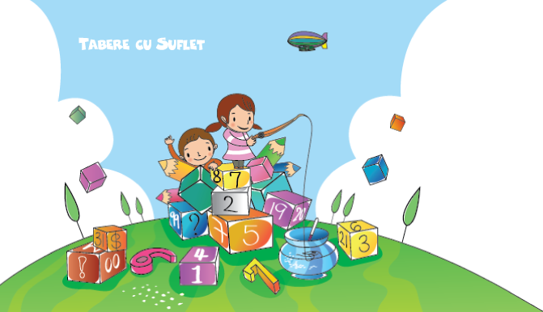
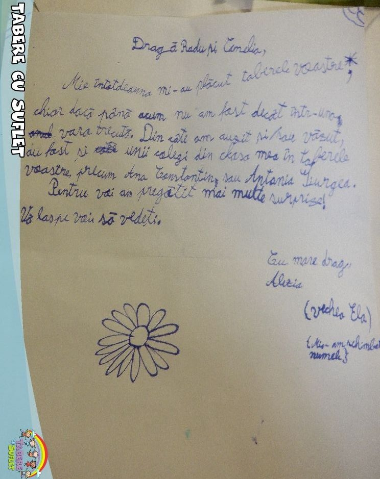
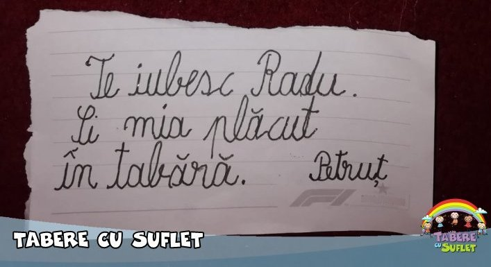
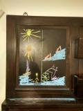

/ Impresii
/ Impresii

521. Andreea, 2026-03-16, 18:32 - Craiasa Zapezii, 14 - 15 mar 2026
Multumim pt tot. Iustina a venit foarte incantata.
520. Anghel Andreea, 2026-02-20, 19:03 - Tabara Veseliei, 15 - 20 feb 2026
Va multumim din suflet pentru tot ce ati facut pentru copii in aceasta tabara. Alizee a venit acasa radiind si ne-a povestit cu atata entuziasm despre ski si despre echipa, iar faptul ca a fost laudata de instructor pentru abilitatile ei la ski i-a dat o incredere uriasa.
Se vede ca este multa implicare si profesionalism in spatele acestei tabere. Multumim pentru grija, rabdare si dedicare! 🙏
519. Corina Pripis, 2026-02-20, 14:25 - Tabara Veseliei, 15 - 20 feb 2026
Wow..noi va mulțumim mult pentru feedback. Este meritul dvs 100% oricum, toate cărămizile le-ati pus acolo, în aceste minunate tabere 🥰
Da, sigur, chiar ținem legătura și poate reușim să mai facem câte un weekend la zăpadă..ar fi f util pt el.
Chiar apreciem mult tot ce ați făcut și faceți pt Marc (și Maia) ...sunt amintiri dragi ce le vor rămâne cu siguranță peste ani și ani 🙏😊
518. George Stanciu,2026-02-4, 17:20 - Tabara Vacantei, 2 - 7 ian 2026
Evelina este foarte bine - a venit din tabara de ski foarte schimbata, in bine. I-a placut foarte mult si va repeta experienta. [...]
Va multumim mult pentru aceasta experienta! Sa ne revedem cu bine!
517. Andreea, 2026-01-18, 10:44 - Weekend Activ la Schi, 25 ian 2026
Ce ati apreciat la activitatea respectiva?
Am apreciat organizarea foarte buna, atmosfera prietenoasa si rabdarea instructorilor pe parcursul activitatilor de ski.
516. Sorina Tudorache, 2026-01-18, 8:00 - Tabara Vacantei, 2 - 7 ian 2026
Ce ati apreciat la activitatea respectiva?
Grija pt copii, organizarea, faptul că s-au simțit foarte bine.
515. Corina Corobea Birceanu, 2026-01-10, 12:29 - Tabara Vacantei, 2 - 7 ian 2026
Bună ziua! Iosif s a simțit foarte bine în tabără. Mulțumim pentru organizare. Cu siguranță mai venim cu d voastră! I a plăcut foarte mult. S a înțeles foarte bine și cu “domnul instructor “😊
514. Mihai Dumitru , 2026-01-9, 15:15 - Tabara Vacantei, 2 - 7 ian 2026
Luca a fost foarte incantat de tabra dvs si de experienta acumulata in snowboarding, a apreciat toate recomandările de la dvs si de la Ted, ne-a povestit 2 ore aseară experienta pe zapada alături de echipa, era entuziast desi obosit :).
Mulțumim tare mult pentru grija si pentru implicare.
513. Corina Pripis, 2026-01-9, 10:46 - Tabara Vacantei, 2 - 7 ian 2026
Mulțumim Cami și Radu pentru o noua tabără reușită, interesanta și dincolo de ski..cum numai Tabere cu suflet știu să facă. Unii deja așteaptă tabără din februarie ...aventura cu trenul a fost pt ei doar atât...o alta aventura 😍
Mulțumim și va imbratisam cu drag..
512. Alexandra Brotoiu, 2025-11-09, 16:10 - Tabara de Toamna, 26 - 31 octombrie 2025
Q: Ce parere aveti despre faptul ca in tabara au fost doar trei copii? A fost o problema?
A: Sigur ca nu!
Ma intreb oare, cum sa nu apreciezi asta?
Este de apreciat din foarte multe puncte de vedere
Spune multe despre dvs. ca oameni.
Eu ca mama, am stat linistita pentru ca stiam ca atentia si grija dvs. se imparte la 3 😊
511. Alexandra Brotoiu, 2025-11-09, 15:50 - Tabara de Toamna, 26 - 31 octombrie 2025
Multumim mult!❤️
Tudor ne a povestit despre fiecare activitate. A fost foarte incantat si abia asteapta sa vina in urmatoarea tabara ☺️
Nu avem cuvinte suficiente sa va multumim!
Pentru noi conteaza foarte mult, mai ales ca a fost prima tabara.
A spus ca ii place mult si in mod egal si de Cami si de Radu ☺️
510. Sorina Tudorache, 2025-07-04, 10:45 - Weekend Activ la Wakeboarding, 3 iulie 2025
Iris s-a simtit absolut minunat [...]. Abia astepta sa ajunga azi la scoala sa le povesteasca colegilor cum s-a dat pe placa si cu caiacul.
Bunica a avut cateva ore binemeritate de relaxare, cu care nu se intalneste prea des. Asadar i-a prins tare bine si a avut numai cuvinte de lauda la adresa dumneavoastra :)
Va dorim o vara grozava, sa ne auzim cu bine!
509. Beatrice Jinescu, 2025-05-16, 14:36 - Weekend Activ in Rezervatia de Bujori, 11 mai 2025
Profesionalismul si bucuria echipei de a oferi o stare de bine, informatii interesante si amintiri placute.
508. Raluca Ianculescu, 2025-01-27, 10:02 - Tabara Unirii, 24 - 26 ian 2025
Buna dimineata! Felix s-a intors in toane si cu impresii excelente! E frumos in tabara fara parinti! Mai vrea, dar sa fie si Cami!:)) Asadar obiectiv atins, va foarte multumim! 🙏🙏🙏
…
De ieri nu-i mai tace gura de cat de minunat a fost si ca mai vrea! Este cea mai mare realizare a ultimei perioade!
🤗
507. Ioana Lefterescu, mama Mariei si a lui David, 2025-01-24, 11:40 - Tabara Vacantei, 2 - 7 ian 2025
Bună ziua. Ați învățat copiii sa schieze ff frumos și tehnic.
Chiar se descurca singuri de minune
Ne-au povestit tot ce i-ati învățat!!!!
…
Maria: Multumesc mult doamna Cami!
506. Svetlana Slobodeanu, 2025-01-08, 20:26 - Tabara Vacantei, 2 - 7 ian 2025
Alexandru si Sofia au fost in tabara vacantei din 2025. Au avut o experienta extraordinara!! Desi exercitiul a fost unul deloc usor, au trecut cu bine prin toate incercarile ))) Au ramas extraordinar de incanati si entuziasmati. Gratie implicatiei si dedicatiei antrenorilor, in special dlui Radu si dnei Cami, copiii capata experiente deosebite. Nu e o tabara simpla - este o tabara cu dedicatie, cu accent pe activitati comune de grup si pe educatie. Este o adevarata TABARA CU SUFLET!
505. Elena Stuparu, 2025-01-07, 19:07 - Tabara Vacantei, 2 - 7 ian 2025
Mulțumim pentru clipele frumoase din tabăra Vacanței. Anei i-a plăcut foarte mult!
504. Cristina Caradima, 2025-01-07, 18:36 - Tabara Vacantei, 2 - 7 ian 2025
Va multumim foarte mult ptr tot; ne bucuram ca am ajuns langa voi si ne a fost tare drag de voi toti; sunteti minunati si foarte bine organizati si imi doresc sa deveniti mentorii copilului nostru …
[Daca i-a placut Rozei in tabara] I a placut e putin spus! Roza nu mai vrea la volei, nu mai vrea la inot, vrea in tabara de ski! Deja isi strange constiincioasa fiecare ban primit intr o pusculita, avand in sfarsit un scop precis cu ei: tabara!!🫶🏻
503. Elena Grasu, 2024-10-24, 17:24 - Weekend Activ la DH, 20 oct 2024
Mulțumim mult!
Le-a plăcut foarte mult [copiilor]! George, ca de obicei, super încântat!!!
502. Alex, 13 ani, 2024-10-20, 18:00 - Weekend Activ la DH, 20 oct 2024
Ma bucur ca am venit
Mi-a placut! A fost smecher
501. Alexandru Dumitrescu, 2024-10-5, 8:14 - Eveniment Teambuilding organizat impreuna cu TeamXpert, 4 oct 2024
Mi-au plăcut toate activitățile pe care le-am desfășurat. Am apreciat ca activitățile au fost relativ dificile și ne-au pus mințile la contribuție, dar au fost și foarte distractive în același timp.
500. Alexandru Buciu, 2024-03-14, 15:58 - Tabara de Martisor, 25 feb - 1 mar 2024
Viviana s a simțit foarte bine în tabăra organizată de dumneavoastră. A venit cu cunoștințele dobândite pe skiuri și cu o experiență plăcută ce a creat amintiri deosebite. Pentru toate acestea va mulțumesc dar și pentru grija și modul în care ați avut grija de ea!
499. Sorin Badoiu, 2024-09-22, 22:17 - Weekend Activ la Catarat, 28 sep 2024
Am apreciat absolut totul, de la comunicare la desfasurare, buna pregatire, atat tehnica cat si teoretica
498. YI Panaitescu, 2024-09-09, 17:08 - Academia de Pictura, 28 iul - 2 aug 2024
Camelia-Nadia Savin în vara ☀ 2021, în TABĂRA DE PICTURĂ 🎨 = https://www.facebook.com/TabereCuSuflet, am făcut PRIMUL PAS spre Liceul Tonitza,
MERCI Camy & Radu Savin, Angelica Alexa, Tabere Cu Suflet, ordinea este doar cronologică 🍀!
497. Tamboi Liviu, 2024-09-09, 14:28 - Weekend Activ cu Bicicletele si Caiacele, 7 sep 2024
O excursie minunata pentru Bogdanel cum doar niste profesionisti pot face, de mers stiu si eu sa merg cu bicicleta, la caiac poate m-as descurca dar nu as reusi sa fac o excursie asa minunata cum o faceti voi(caiace si bicicleta). Oricum activitati nu foarte dificile dar facute in maxima siguranta, Felicitari!
496. Tamboi Liviu, 2024-09-07, 12:02 - Micii Alpinisti, 18 - 23 aug 2024
Am apreciat în primul rând empatia organizatorilor,fapttul ca se ocupa de copii, că își centrează toată atenția ca ei sa se simtă bine, am apreciat activitățile, copilul meu a mai fost in alte 3 tabere ,dar în niciuna nu a venit atât de fericit, mulțumit, și nerăbdător să meargă din nou acolo.
Feedbackul meu este mai mult decât pozitiv,nu pot decât să vă apreciez și să garantez că revenim in aceste tabere cu siguranță!
495. Madalina, mama Ilincai, 2024-08-24, 21:22 - Marea Galopiada, 12 - 17 aug 2024
Fata mea a imbunatit postura de calarit si a facut progrese la galop si sarituri. De asemenea, a capatat incredere si siguanta mai multa la calarit. Mai mult, antrenorul de acasa a confirmat progresele ei si a cerut detalii pentru a trimite alti calareti in acest tip de tabara de calarit.
494. Catalina Voicila, 2024-08-24, 13:31 - Micii Alpinisti, 18 - 23 aug 2024
Irinei i-au placut tare mult atât jocurile cât și escalada.
Deja mă întreabă dacă anul viitor când venim la bunici mai poate prinde o tabără cu voi
Sunteți geniali 🤗 Se pare că i-au prins bine amintirile și de acum 5 ani de la tabăra pe 2 roti
493. Roxana Mihalache, 2024-08-16, 09:19 - Tabara pe 2 Roti, 25 - 30 aug 2024
Noi vă mulțumim pentru experiențele extraordinare pe care le dăruiți copiilor. După fiecare tabără vin foarte entuziasmați de activitățile făcute și cu regretul ca s-a terminat prea repede.
492. Oana și Dan Ungureanu, 2024-08-11 14:46 - Academia Curajului, 28 iul - 2 aug 2024
Vă mulțumim pentru tot ceea ce faceți pentru copii, suntem norocoși și recunoscători ca v-am găsit!
491. mama lui Iris, 6 ani, 2024-08-04 12:40 - Academia Curajului, 28 iul - 2 aug 2024
N-am apucat sa va mulțumesc pentru grija și momentele minunate pe care i le-ati daruit
A zis ca a fost perfect, chiar dacă a plans putin ca ii era dor de mine
Asteapta cu nerăbdare tabara de ski
490. Mirela Maftei, 2024-08-02 9:20 - Marea Galopiada, 12 - 17 aug 2024
Mulțumim mult pentru tot ce faceti pentru copii!
489. D.P., 2024-08-02 9:11 Academia de Pictura, 28 iul - 2 aug 2024
Va multumim foarte mult, i-a placut Oliviei mult mancarea si activitatile. [...] Inca o data multumiri, ma bucur ca Olivia a avut aceasta experienta si sigur ne vedem si la altele.
488. Corina Stoica, 2024-06-21 01:12 - Weekend Activ la Wakeboarding, 16 iun 2024
A fost o experienta uimitoare și lui Tiberiu i-au plăcut mult ambele activități, a fost de vis!!Sigur vom mai participa și la alte activități uimitoare alături de Echipa Tabere cu Suflet!! De cate ori v-am ales am fost uimiti si incantati! Sunteti niște oameni minunati care pun suflet si se implica, iubesc copiii și fac lucruri deosebite!Felicitări pentru organizare și pentru tot ce faceți frumos pentru copiii noștri!!
487. Ana Popescu, 2024-05-23 10:47 - Weekend Activ in Tara Luanei, 18 mai 2024
Sambata, 18.05.2024, am trait o experienta binecuvantata cu vreme frumoasa, oameni minunati, peisaje superbe, aer curat si niste trasee de munte care nu fac altceva decat sa te bucure si sa te incante. O alegere perfecta!
486. Roxana Campian, 2024-05-20 11:17 - Weekend Activ la Catarat, 19 mai 2024
Copiilor le-a placut foarte mult, au zis ca a fost extraordinar, mi-au povestit toata seara. Multumim pentru aceasta initiere in escalada 😊.
485. Ioana Nadoleanu, 2024-05-19 8:18 Weekend Activ in Tara Luanei, 18 mai 2024
Prima drumetie din viata lui Matei am ales-o cu sufletul, abia astept prima tabara alaturi de ei
484. Ana Popescu, 2024-05-18 16:00 Weekend Activ in Tara Luanei, 18 mai 2024
Multumim pentru tot! Singurul lucru de care imi pare rau e ca nu v-am cunoscut mai devreme!
483. Dana Onofrei , 2024-04-10 16:24 Weekend Activ pe 2 Roti, 6 apr 2024
Multumim pentru experienta frumoasa a weekendului activ cu bicicletele pe malul Argesului din 6 aprilie.
Copiii au fost incantati, adultii au fost de asemenea placut surprinsi sa cunoasca un om deosebit in persoana organizatorului.
Speram sa ne revedem curand pentru alte experiente active.
482. Mirela Scarlat, 2024-03-26 19:13 Tabara Marea Galopiada, 12 - 17 aug 2024
Ma bucur ca exista asemenea tabere. Mi se pare un vis!
481. Simona Pestrea, 2024-03-19 7:55 Weekend Activ la Schi, 16 mar 2024
Fetelor le-a placut mult ziua petrecuta cu dvs, in special povestile. Multumim inca o data pentru tot.
480. Mihalache Catalina, 2024-03-13 10:24 Weekend Activ la Schi, 16 mar 2024
Anastasia a venit foarte fericita acasa(ca de obicei)… Ne-a povestit ca a sărit peste damburi și cumva asta a impresionat-o cel mai mult… ca a schiat cu betele. Chiar a venit extrem de incantata.
Mulțumim frumos, pentru tot ce faceți cu si pentru Sia ❤️🙏🏼🏼
479. Corina Pripis, 2024-02-25 22:50 Tabara Veseliei, 18 - 23 feb 2024
Vă mulțumim pt o noua tabăra de ținut minte...amintiri frumoase care se depun acolo între un colțișor al memoriei an de an... Din suflet speram sa ne revedem cat mai curând și cu bine și sănătate. Toate cele bune și mii de mulțumiri pentru tot ce faceți pt copii☺️🥰🤗
478. Tatal lui Tiberiu, 2024-02-25 22:40 Tabara Veseliei, 18 - 23 feb 2024
Va multumim pentru organizarea unei tabere atât de frumoase, va mulțumim pt răbdarea și implicarea dvs se vede ca totul este din suflet pt copii!!! Vom reveni cu drag la tot ce mai organizați!!
477. Cristina Caradima, 2024-02-12 21:42 Micii Campioni, 4 - 9 feb 2024
Tabara Micii Campioni a fost un real succes, cel putin ptr fetita mea care a invatat sa schieze. I-a placut tare mult, ii este dor de dl Radu, dna Cami este ”buna”! Va multumim ptr tot!
O experienta foarte frumoasa,de repetat!
Ahhh!! De cand s a intors din tabara isi face dus singura😀
476. Cristina Caradima, 2024-02-12 21:34 Micii Campioni, 4 - 9 feb 2024
Copilul a invatat ce si a propus: sa schieze ☺️ intr-un timp chiar foarte scurt
475. Gianina Danila, 2024-02-11 13:28 Tabara Veseliei, 18 - 23 feb 2024
Ca de obicei, absolut minunati!
Inca o data, mii de multumiri si succes in tot ce faceti pentru copii cu aceste tabere si weekend-uri active!
474. Raluca Ianculescu, 2024-02-10 19:21 Micii Campioni, 4 - 9 feb 2024
Va multumim pentru ce faceti pentru Felix, pentru frumoasele amintiri si pentru ca sunteti un om bun! Seara frumoasa!
473. Mama Andreei, 2024-01-08 13:02 Tabara Vacantei, 2 - 7 ian 2024
Multumim pentru tot ajutorul si sustinerea de care a beneficiat Andreea din partea dumneavoastra in aceste zile. Andreea a fost foarte incantata
472. Slobodeanu Svetlana, 2023-12-30 14:17 Tabara de Revelion, 27 - 30 dec 2023
Va multumesc mult pentru implicare si pentru succesele copiilor.
471. Stefan Chitic , 2023-10-30 09:04 Weekend Activ in Tara Luanei, 28 oct 2023
Iti multumesc foarte mult pentru toata intiativa ta! Mi-a placut la nebunia calatoria [in Tara Luanei] si iti sunt recunoscator! Cu mare drag cand mai faci asemenea excursii, cheama-ne te rog si pe noi ca venim cu mare entuziasm! Tuturor ne-a placut foarte mult si iti multumim. Chiar iti multumim caci ne-ai imbogatit putin viata si ne-ai dus in acel loc magic!
A fost o atmosfera diferita, plina de magie! Iar conectarea cu natura m-a ajutat mult si iti multumesc.
Sa ai o saptamana superba si Doamne ajuta!
470. Carmen Susman , 2023-10-29 13:48 Weekend Activ in Tara Luanei, 28 oct 2023
A fost minunat , un loc deosebit, companie grozava…am simtit aceasta iesire ca o recalibrare. Mulțumim mult🙏
469. Elena Grasu , 2023-10-06 07:01 Weekend Activ pe 2 Roti, 30 sep 2023
Ca parinte apreciez foarte mult ceea ce faceți pentru copiii noștri. Pe lângă faptul ca îi duceți și ii aduceți, pe lângă “cea mai buna mancare” , cele mai prețioase rămân “amintirile” pe care ni le oferiți!
468. Delia Barbuta , 2023-09-06 14:50 Galop si Sarituri, 27 aug - 1 sep 2023
Ana a plans in hohote cand a ajuns acasa caci nu isi dorea sa se termine tabara 😀
Cred ca e cel mai bun feedback. S-a simtit minunat, nu cred ca conteaza altceva. Multumim!
467. Doina Anghel, 2023-07-28 7:31 Calaretii Veseli, 16 - 21 iulie 2023
Pentru Bianca tabara a fost extraordinara, s-a simțit foarte bine. I-au plăcut calutii, și in mod special poveștile despre spiriduși si vrăjitoare și plimbările în padure. Ceea ce este remarcabil având în vedere ca ea se plânge mereu când trebuie sa meargă pe jos :) A zis ca mâncarea a fost excepțională și multumesc frumos pentru tort. Își dorește sa mai meargă în tabere cu dvs dacă o veți mai lua.
466. Alexandra Tiganus, 2023-07-27 18:32 Calaretii Veseli, 16 - 21 iulie 2023
Mulțumim pentru o tabara reușită! Evident că Dianei i-a plăcut, deoarece s-a înscris și în tabăra de la Breaza "Sărituri și obstacole".
465. Elena Grasu, 2023-07-2 22:35 Tabara pe 2 Roti, 24 - 29 iunie 2023
George s-a întors foarte încântat! I-au placut foarte mult traseele pe munte! As putea spune ca s-a bucurat și de ploaie!
Mulțumesc foarte mult pentru surpriza de Sf Petru! A fost primul lucru pe care l-a povestit!
Cu siguranța va mai merge in Tabere cu Suflet!🤗
464. Angelica Abeaboeru, 2023-06-14 8:38 Weekend Activ in Tara Luanei, 10 iunie 2023
Un loc minunat in care te deconectezi de cotidian si te conectezi la natura, la radacini, unde ai prilejul sa asculti povestile naturii prin schimbarile pe care le capata in decursul anilor. Un loc minunat, cu un ghid de o rabdare iesita din comun, domnul Radu. Recomand cu mare drag!
463. Corina Stoica, 2023-06-12 17:06
Va mulțumesc tare mult
Cu siguranță ne vom mai vedea
Mulțumim pt oportunitate
Și apreciem implicarea și lucrurile frumoase făcute cu cei mici
🤗🤗🤗🤗
462. Mircea Popescu, 2023-06-8 10:10 Aventuri in Insula de Smarald, 1 - 5 iunie 2023
Este adevarat, au fost 5 zile foarte frumoase. Sebastian a fost foarte incantat si s-a simiti bine. Ma asteptam sa adoarma pe drum pana acasa, in shimb ne-a povestiti tot drumul. I-a placut.
461. Corina Stoica, 2023-05-25 18:14
Felicitări pt lucrurile minunate pe care le organizati cu copiii nostri
460. Gabriela Breabăn, 2023-05-25 23:28 Aventuri in Insula de Smarald, 1 - 5 iunie 2023
Mulțumesc, sănătate si dvs sa continuați treaba asta minunata cu copiii! 🙏🏻 Revenim cu mare drag cat de repede.
459. Mihaela Catalina Ionita, 2023-04-23 23:28 Weekend Activ la Schi si Snowboard, 1 mai 2023
Geniale pozele! Și mulțumim din suflet, pentru toate amintirile pe care Sia le acumulează.
Noi suntem extrem de mulțumiți și recunoscători. Mă înclin 👏👏👏
458. Corina Stoica, 2023-04-23 23:28 Weekend Activ la Catarat, 18 aprilie 2023
Va mulțumim si va felicitam pt lucrurile minunate pe care le organizati cu copiii
457. Corina Moga, 2023-03-23 12:00 Snowkidz, 18-19 mar 2023
Stiti parerea noastra si anume ca sunteti extraordinari si va multumesc inca o data pentru tot ajutorul pe care pana la urma il acordati parintilor prin activitatile sportive si educative pe care le organizati cu copiii nostri.
Cel mai bun feedback pe care vi-l pot lasa este sa va spun ca Mircea a fost extrem de suparat la intoarcere pentru ca nu a fost tabara de 5 nopti, ci doar excursie de weekend.
456. Roxana Mihalache, 2023-03-06 10:20
Apreciez si respect foarte mult tot ceea ce faceti pentru oameni, mici si mari, astfel incat doresc sa directionez catre dumneavoastra formularul 230.
Va multumesc cu recunostinta pentru tot!
455. Corina Pripis, 2023-02-26 15:08 Tabara Veseliei, 19 - 24 februarie 2023
Încă o dată mulțumim din suflet pentru inca o tabără minunata (a cata oare 😊 ??)
Sa ne auzim și să ne revedem cu sănătate și...ținem aproape ca întotdeauna 👌👏👏🙏
454. Andreea Videanu, 2023-02-24 21:45 Tabara Veseliei, 19 - 24 februarie 2023
Va multumim pentru tabara! A fost extraordinar, asa mi-a spus Vlad. S-a simtit foarte bine! Cu siguranta o sa mai vina
453. Guta Cornelia, 2023-02-20 9:51 Tabara Zapezii, 12 - 17 februarie 2023
Multumim pentru experienta minunata din tabara organizata in saptamana 12 - 17 februarie 2023!
Maria a intalnit oameni minunati si copii la fel de minunati. In mod sigur vom reveni pentru o noua experienta.
P.S. Datorita pozelor am fost alaturi de voi in fiecare zi. :)
452. Ditu Anda, 2023-02-16 7:25 Tabara Zapezii, 12 - 17 februarie 2023
Multumim din suflet pentru tot ceea ce faceti. Sunt mandra de Andreea.
451. Violeta Stanciu, 2023-02-10 11:53 Tabara Piticilor, 19 -24 februarie 2023
Mulțumim, Tabere Cu Suflet ! O echipă frumoasă se formează cu oameni buni și frumoși! Succes în tot ceea ce faceți!
450. Cătălina Mihaela Ioniță, 2023-02-2 14:29 Tabara Piticilor, 29 ianuarie - 3 februarie 2023
Va suntem asa de recunoscători, pentru tot ce faceți cu Sia
449. Ruxandra Radulescu, 2023-02-1 8:57 Tabara Piticilor, 29 ianuarie - 3 februarie 2023
Minunat! Faceti lucruri grozave pt copii!
448. Corina Pripis, 2023-01-30 22:59
💖 🎂 Multumiri multe si imbratisari familiei "Tabere cu suflet"... Familia celor cu suflet mare si gata mereu de aventura 🙂
447. Andrea Duta Huszar, 2017-02-8 11:27 Tabara Vacantei, 2 - 7 februarie 2017
Si am incheiat o saptamana de ski intensiv 😜 bravo Naty 😍 te iubim enorm ❤ multumiri din suflet celor de la Tabere cu Suflet - ma bucur ca v-am cunoscut 😜 Radu Savin si Camelia Savin
446. Corina Pripis, 2023-01-24 20:21 Tabara Unirii, 21 - 24 ianuarie 2023
Wow, copiii sunt așa incantati..totul a fost super se pare ..de la zăpadă ...la pârtii, soare și până la mâncare pe care Marc o lauda întruna 😁
Amândoi mi-au spus sa va transmit că le au plăcut tare mult,, s-au simțit grozav. Marc a spus că deși au fost copii putini i-a plăcut că au fost "adevărați copii de tabăra" care aveau "spiritul taberei" 🤩..și Ted și Ian..
Așa că...multe mulțumiri și din partea noastră..dar mai ales a copiilor..🥰
Va rog din suflet sa ii transmiteți și lui Radu...a fost un weekend de vis se pare..🙂
Va îmbrățișăm cu drag și...ținem aproape. 🌹🌹🤗
445. Corina Pripis, 2023-01-10 11:27 Tabara Vacantei, 2 - 7 ianuarie 2023
Multumim pentru inca o tabara frumoasa... Chiar daca a fost cu mai putina zapada naturala si mai mult artificiala.. atmosfera si buna dispozitie pare ca au fost aceleasi.. ca de obicei 🙂
444. Andrei Barbu, 2023-01-9 9:22 Tabara Vacantei, 2 - 7 ianuarie 2023
In primul rand vreau sa va multumesc pentru experienta din tabara organizata saptamana trecuta. Alex a fost foarte incantat, atat de activitatile in sine, cat si de colectivul in care s-a integrat foarte bine.
In al doilea rand, ca urmare a experientei frumoase, Alex isi doreste sa participe si in tabara de snowboard din perioada 19-24 februarie.
443. Corina Pripis, 2019-01-22 16:11
Sunteti niste oameni deosebiti.
Va multumim din suflet, Tabere cu Suflet 
Corina Pripis
(o mamica fericita ca v-a intalnit…)
442. Mariana Enciu, 2022-12-15 20:18 Aniversare activitati sportive 2002 - 2022
Chiar asa: “A wonderful journey”
Si noi va multumim ca existati. Ne leaga multe amintiri frumoase de la concursurile MTB din Comana ( la vremea aceea erati cam singurii care acceptati participanti sub 19 ani) sau de pe partiile din Predeal.
Felicitari pentru ceea ce faceti si mult succes in continuare!
Mariana Enciu & Echipa
441. Charlotte Van den Abeele, 2022-12-15 15:24 Aniversare activitati sportive 2002 - 2022
Felicitari Radu si Cami !!!
Multumesc pentru toate momente frumoase de neuitat trecute impreuna; pe bicicleta, la munte, pe ski
va pupam
440. Anca Hîrsu, 2022-12-9 5:14
Felicitări pentru pasiunea cu care faceți totul pentru copii!
439. Laura Mihaela Toader, 2022-09-2 7:26 Pe Caluti!, 28 august - 2 septembrie 2022
În fiecare seară Luca mi-a povestit cu entuziasm despre ziua respectivă și totodată mi-a spus cât de mult își dorește să participe în următoarea tabără. Vă doresc succes, în continuare, în tot ceea ce faceți !
P.S. Mulțumesc maxim pentru toate încărcările (video+poze+info) de pe pagina dvs. Cu ele, m-am simțit și eu, acolo, cu dvs.
438. Popescu Viorica, 2022-08-29 19:50
Super tare va felicit pentru tot ce faceti! Va urez succes pe mai departe
437. Mihaela Stamate, 2022-08-13 19:49 Calaretii Veseli, 7 - 12 august 2022
Multumim!
Teodorei i-a placut mult!
436. Miruna Georgescu , 2022-08-13 17:30 Calaretii Veseli, 7 - 12 august 2022
Bună ziua. Va mulțumim mult pentru tot. Teodora este foarte incantata de experienta avuta. Mi a spus ca a fost foarte frumos! În plus vreau sa va mulțumesc și pentru grija avuta, ne speriasem un pic când cu începutul de raceala!!! O seara frumoasa și o sa urmărim următoarele proiecte pe care o sa le aveți!
435. Ingrid Panaitescu, 2022-08-12 8:22 Tabara de Tenis, 31 iulie - 5 august 2022
la anul, abia aștept sa revin la TABĂRA DE PICTURA  , echipa SUPER ok
, echipa SUPER ok 
434. Cristian Terpan, 2022-08-11 10:56 Tabara de Tenis, 31 iulie - 5 august 2022
Ce ati apreciat la activitatea respectiva?
A fost foarte frumos si bine. Cazare si mancare placuta , dupa cum am aflat de la fetita mea. A si- a facut
o multime de prieteni noi. In concluzie a fost foarte bine si apreciem mult atat caldura organizatorilor precum si frumusetea locurilor.
433. Felicia Mirea , 2022-08-10 18:10
VACANTA  inedita pentru orice elev
inedita pentru orice elev  /copil
/copil  !
!
432. Irina Petre, 2022-08-9 20:00 Academia Curajului, 31 iulie - 5 august 2022
Tot respectul pt dvs, sa faceti tabara dupa tabara...necesita un efort imens, dar cu siguranta e si multa pasiune, altfel n-ar iesi nimic bun.
431. Eric Stoicescu, 2022-08-6 10:53 Transilvania pe 2 Roti, 25 - 30 iulie 2022
Ce ati apreciat la activitatea respectiva?
Tabara cu activitati sportive foarte diverse,cazari interesante cu multe obiective turistice aproape.Multumesc pentru aceasta experienta inedita!
430. Popescu Viorica, 2022-08-5 16:53
Super! Sunteti oameni deosebiti! Faceți lucruri cu suflet mare!
429. Alina, 2022-08-4 16:45 Transilvania pe 2 Roti, 25 - 30 iulie 2022
In primul rand m-am bucurat sa aud impresiile copilului meu cand s-a intors din tabara. :) I-au placut extrem de mult organizarea, activitatile si cazarile, iar mie mi-a placut update-ul constant de pe blog si faptul. Nu este prima tabara la care a participat, insa este prima cu voi, iar Luca a zis ca vrea cu siguranta si la anul, chiar m-a intrebat daca nu il pot inscrie de pe acum. :)
428. Cătălina Mihaela Ioniță , 2022-08-3 20:53 Academia Curajului, 31 iulie - 5 august 2022
Recomand, doi oameni de calitate, cum rar întâlnești în ziua de astăzi. Sunt pur și simplu MINUNAȚI! Mulțumim, pentru momentele oferite Anastasiei. 
427. Eugen Zbircea, 2022-08-2 21:58 Marea Galopiada, 18 - 23 iulie 2022
Maria este super incantata de taberele cu voi
Sa va dea Dumnezeu inspirație, putere și sa va țină sănătoși sa faceți lucruri frumoase!
426. Viorica Popescu, 2022-07-30
Super tare felicitari pentru tot ce faceti va urez multa sănătate
425. O doamna cazata la aceeasi pensiune , Aita medie, 2022-07-27 8:42 Transilvania pe 2 Roti, 25 - 30 iulie 2022
Nu am vazut copii mai cuminti si mai bine crescuti ca acestia! Si mi-au trecut ceva prin mana la viata mea!
424. Alexandra Tiganus, 2022-07-25 10:25 Marea Galopiada, 18 - 23 iulie 2022
Multumim pentru frumoasa tabara! Diana a învățat multe lucruri noi. A venit foarte încântată. Anul urmator sper sa reușim sa o mai trimitem în alte tabere de echitatie organizare de dvs.
423. Diana, 2022-07-25 9:35 Marea Galopiada, 18 - 23 iulie 2022
Mi-a plăcut ca am stat chiar la centrul de echitatie. Mi -au placut orele intensive de echitatie și ca am învățat sa sar peste x si stationara ...Antrenorii au fost deosebiți, am învățat multe lucruri noi.
422. Alexandra Tiganus, 2022-07-24 18:18 Marea Galopiada, 18 - 23 iulie 2022
Final de tabără "Marea Galopiadă" !
Mulțumim "Tabere cu suflet" pentru organizarea unei tabere reușite! Sperăm să repetăm experiența și anul viitor.
421. Mama unui copil diagnosticat cu tulburare de opozitionism provocator, 2022-07-21 1:13 Pe Carari de Munte, 25 - 30 iunie 2022
Eu si Stefan va multumim pentru sansa acordata!
420. Claudia K., 2022-06-19 16:46 Tabara Cercetasilor, 12 - 17 iunie 2022
Ce ati apreciat la activitatea respectiva?
Activitățile în aer liber și de grup; grija pt dezvoltarea sănătoasă și armonioasa a copiilor.
419. Simona Popescu, 2022-06-12 7:42
Felicitari amandurora pentru tot ce faceti pentru educatia, sanatatea fizica si mentala a copiilor, prin taberele organizate, si nu numai! 
418. Diana Zilisteanu, 2022-06-9 9:02 Weekend Activ la Catarat, 4 iun 2022
Ce ati apreciat la activitatea respectiva?
Rabdarea cu copiii mici, faptul ca au fost incurajati sa faca lucruri noi
417. Raluca Marin, 2022-06-6 21:18 - Weekend Activ pe 2 Roti in Rezervatia de Bujori, 15 mai 2022
Ce ati apreciat la activitatea respectiva?
Responsabilitatea dlui Radu fata de copii, povestile, aprecierea fiecarui lucru deosebit ce ne iesea in cale, excursia in sine prin padure.
416. Simona Popescu, 2022-06-3 17:35 - Premiile Femeia Anului, 8 iun 2022
Felicitari!!! Toate gandurile noastre bune! Sunteti un model, pentru tot ceea ce faceti!
415. Gina Stanica, 2022-06-3 15:15 - Premiile Femeia Anului, 8 iun 2022
FELICITĂRI dna SAVIN ..ptr. motivație....inspiratie ...exemplu dat si nu in ultimul rand ptr. efortul depus . Felicitări de 1000 de ori.
414. Diana Zilisteanu, 2022-05-9 14:41 - Asociatia Tabere cu Suflet, 17 - 22 aprilie 2022
Multumim ca ne primiti in Familia Tabere cu Suflet si speram sa fim pe aproape multa vreme de acum incolo!
413. Daniel Costea, 2022-05-5 12:29 - Tabara de Florii, 17 - 22 aprilie 2022
Cătălin s-a simtit minunat în tabără.
412. Raluca Jianu, 2022-04-29 12:04 - Calutii Inaripati, 25 - 30 aprilie 2022
Va multumim mult!!!
Sunteti minunati si nu o spun eu ci bucuria copiilor care se observa din poze. Sunt convinsa ca in realitate se vede si mai bine
Apreciem din suflet tot ceea ce faceti pentru copii!!!
Sunt nespus de recunoscatoare ca Nicholas are parte de o asemenea experienta care ii va ramane cu siguranta in amintire in cel mai placut mod in contextul in care este si prima lui tabara. Cu siguranta ca isi doreste sa participe si la altele. Speram ca v-ati inteles bine cu el.
Cu toate acestea il asteptam cu nerabdare fiindca si pentru noi este o experienta inedita
Va salutam si va imbratisam cu drag, asa de la distanta, va dorim sa petreceti frumos in continuare si urmarim pozele!
411. Corina Moga, 2022-04-29 9:17 - Calutii Inaripati, 25 - 30 aprilie 2022
Sincer nu am cuvinte sa va multumesc pentru tot ceea ce faceti!!! sunteti minunati!
Nu va pot spune cata bucurie simt in inima cand vorbesc cu Mircea la telefon si cand vad cat este de incantat!!! Am o multumire ce nu poate fi exprimata... aveti parte de toate recunostinta mea!
410. Roxana Mihalache, 2022-04-24 11:22 - Tabara de Florii, 17 - 22 aprilie 2022
Doresc sa va multumesc pentru experienta deosebita oferita Teodorei si lui Sebastian. Au fost foarte incantati de toate activitatile, iar la final erau foarte tacuti si tristi......apoi am reusit sa aflu ca de fapt erau foarte tristi ca se incheiease tabara. Sebi chiar a lasat sa i curga niste lacrimi, iar pe seara deja ii era dor de toti din tabara.
Felicitari inca o data pentru tabara, in totalitatea ei !
Copiii de abia asteapta sa vina vara, sa va reintalniti!
409. Mihaela Rosca, 2022-04-04 10:04 - Weekend Activ pe 2 Roti, Bucsani, 13 noiembrie 2021
Dupa tura superba de la zimbrarie de anul trecut, copiii au ramas cu amintiri foarte frumoase, mai ales distractia maxima de a trece prin balti si rauri :)
408. Ana-Maria Stan, 2022-03-28 16:29 - Weekend Activ la Schi, 26 martie 2022
Voiam sa va multumesc pentru iesirea de sambata la Predeal, a fost o experienta frumoasa pentru copii, diferita de iesirile la ski cu familia, in care s-au simtit bine si au invatat si incercat lucruri noi. Au fost mandri ca au reusit pe partia neagra si de traseul prin padure ne-au povestit cu entuziasm. Le place mult aventura, dar carui copil nu-i place?
Prin urmare, ne bucuram ca v-am cunoscut si sper sa mai avem parte de aventuri noi alaturi de dvs.
Nu stiu de unde aveti forta si energia sa organizati atatea iesiri pentru copii, unele chiar consecutive pe weekend, dar va doresc in continuare aceeasi putere de munca, căci faceti lucruri minunate pentru copii.
407. Ana-Maria Stan, 2022-03-22 18:25 - Weekend Activ la Schi, 26 martie 2022
Anelisse s-a simtit foarte bine si i-a placut. A fost incantata ca a schiat pe zone neexploatate de ea pana acum :). A fost distractiv si cu siguranta isi doreste sa mai repete experienta.
406. Anna METONI, 2022-03-17 19:57 - Snowkidz, 12 - 13 martie 2022
mi-a placut foarte mult ;mi-am facut prieteni si a fost o tabara excelenta; as vrea sa mai vin si mi-as dori sa-mi mai faca Cami tatuaj !
va iubesc f.f. mult !!!!!!!
405. Natalia Popescu, 2022-02-20 18:51 - Olimpiada Copiilor, 13 - 18 februarie 2022
Voiam sa va mulțumesc pentru tot ce ați făcut pentru Anastasia. A vorbit continuu!!! Ba chiar m-a rugat sa o mai trimit în tabere cu dvs. V-a îndrăgit mult de tot.
404. Gabriel Maciuca, 2022-02-20 14:01
E o minunatie ceea ce faci pt copiii romani!
Îți doresc tot binele!
403. Anna, 2022-02-20 11:55 - Weekend Activ la Schi, 12 februarie 2022
A fost o iesire super faina. Mi-am facut prieteni; mi-a placut la nebunie !!!!
402. Natalia Popescu, 2022-02-19 10:52 - Olimpiada Copiilor, 13 - 18 februarie 2022
Multumim mult pentru o vacanta minunata. Mica noastra “Ursulet” a facut un pas mare spre a deveni o adevarata schioare si cel mai important doreste sa mai mearga in tabara. Asa ca, pe curand!
401. Corina Moga, 2022-02-18 20:56 - Olimpiada Copiilor, 13 - 18 februarie 2022
Va multumesc! sunteti minunati!!!!!
numai bine
400. Ana-Maria Morar, 2022-02-16 21:19 - Tabara Atelier, 7 - 12 ianuarie 2020
Amintiri foarte frumoase, în special cele prin pădure care au fost "la pachet" cu poveștile zonei. Mulțumim pentru tot ce faceți pentru copiii noștri.
399. George Mihalache, 2022-02-5 10:47 - Asociatia Tabere cu Suflet
Ma bucur ca pot sa va sustin activitatea in acest mod [prin plata cotizatiei] . Acum vreo cativa ani (2015-2016?) "i-ati pus schiurile in picioare" lui Andrei. Si sper sa faceti acest lucru pentru multi copii, mult timp de acum inainte.
398. Maria Anghel, 2022-01-28 22:22 - Weekend Activ la Schi, 29 ianuarie 2022
Viață frumoasă, de vis!
Sport in natură, aer curat, distracție și sănătate garantate!
397. Luca Metoni, 2022-01-28 11:33 - Tabara Unirii, 22 - 24 ianuarie 2022
Mi-a plăcut zăpada mare și moale, hotelul, care a fost dotat cu tot ce aveam nevoie, prietenii cu care m-am întâlnit și organizatorii taberei: Radu și Camelia. A fost o tabără minunată în care m-am distrat și de abia aștept să mai găsesc o perioadă când să pot merge!
396. Aurel Dumitru, 2022-01-28 10:52 - Micii Campioni, 22 - 24 ianuarie 2022
Miruna (fetita, 4ani) a venit singura in tabara, s-a simtit bine, a participat si implicat in activitati, a fost multumita de ce a reusit sa invete, si-a facut prieteni si probabil cel mai important isi doreste sa revina:). Comunicarea cu Camelia si Radu a fost excelenta si multumesc pentru pentu tot ce ati facut!
395. Anna METONI, 7 ani, 2022-01-27 20:20 - Tabara Unirii, 22 - 24 ianuarie 2022
A fost cea mai tare tabara.Vreau sa mai merg!
Te iubesc Radu !
394. Marinela Stănică, 2022-01-27 17:15 - Tabara Unirii, 22 - 24 ianuarie 2022
Seriozitatea, planificarea, informațiile complete despre desfășurarea taberei, disciplina, buna dispoziție a copiilor, interactiunea buna intre aceștia si cu instructorii.
393. Maria Anghel, 2022-01-23 22:29 - Tabara Unirii, 22 - 24 ianuarie 2022
Distracție maxima in decor feeric! Sănătate și multe bucurii!
392. Gina Stanica, 2022-01-23 13:13 - Tabara Unirii, 22 - 24 ianuarie 2022
Sa aveți o zi BINECUVÂNTATĂ si FRUMOASĂ..
ptr.VOI si copii de care sunteti alături în această mini vacanta de 3 zile. Multumim ptr. TOT ce oferiți. si FELICITARI...RESPECT...si SĂNĂTATE.
391. Violeta Stanciu, 2022-01-11 21:29 - Aripi pentru Viitor, 2 - 7 ianuarie 2022
Bravo, Eva! Mandra de tine! Ma bucur ca in urma cu multi ani vestutele portocalii ne-au atras atentia pe partia de la Predeal. A fost primul ei contact cu Tabere cu suflet! I-a indragit pe toti din primul moment si de-abia astepta iarna sa mearga in tabara cu Radu Savin si Camelia-Nadia Savin! De-a lungul timpului, Radu, Cami si Alex au fost oamenii de la care a invatat mereu cate ceva. Multumim, oameni buni pentru incredere! Speram ca viitorul sa ne ofere momente la fel de frumoase.
390. Dan Dinica, 2022-01-10 22:38 - Tabara Vacantei, 2 - 7 ianuarie 2022
Fiica mea se distrează în această tabără in fiecare an. Dacă la început era copil, acum este adolescenta și tabăra a fost mereu ok pentru ea
389. Carmen , 2022-01-10 18:13 - Tabara Vacantei, 2 - 7 ianuarie 2022
Anastasia s-a simțit minunat în Tabara Vacantei...ca de fiecare data cand a participat la Taberele cu Suflet sau in Weekendurile Active.
Multumim pentru zilele minunate!
388. Diana Ionascu, 2022-01-10 11:52 - Tabara Vacantei, 2 - 7 ianuarie 2022
Anelisse a venit foarte incantata din tabara si cu o serie noi de informatii, care cu siguranta o vor ajuta sa avanseze si sa schieze din ce in ce mai bine. Serile cu jocuri au fost apreciate si au legat prietenii, ceea ce este important intr-o tabara. Eva a fost un instructor bun si Anelisse chiar are numai cuvinte de lauda la adresa ei, ceea ce ma bucura.
387. Cristina Balaceanu, 2022-01-10 12:40 - Tabara Vacantei, 2 - 7 ianuarie 2022
Va multumesc frumos!
Maria a venit deosebit de incantata.
386. Corina Neagu, 2022-01-09 11:12 - Tabara Vacantei, 2 - 7 ianuarie 2022
Buna ziua. Doresc sa va multumesc pentru experientele si grija din tabara.
A fost a patra tabara a Iuliei dar totodata prima din care s-a intors spunand ca mai vrea sa mearga
385. Dan Dinica, 2022-01-08 14:54 - Tabara Vacantei, 2 - 7 ianuarie 2022
Mulțumim mult Radu pentru o noua tabăra super!
384. Cristian Metoni, 2021-12-31 18:36 - Tabara din Alpi, 15 - 22 aprilie 2022
Ca sa sti ce ai creat....2 copii care ne aleargă pe partii negre 🇱🇻😇🍺
383. Mirela Georgescu, 2021-12-31 12:18 - Tabara de Revelion, 18 - 23 decembrie 2021
Mulțumim încă o data pentru ca ne ati ajutat sa transformam câteva zile de vacanta in bucurie și amintiri minunate! 🙂
382. Horatiu Ivascu, 2021-12-24 14:40 - Tabara lui Mos Craciun, 18 - 23 decembrie 2021
Alex a fost foarte incantat de Tabara....si ne-a rugat de cateva ori sa il dam si la anul tot in Tabara cu Suflet.
Felicitari Doamnei Camelia ptr. instructia exemplara. Nu pot spune decat ca mi-a depasit toate asteptarile. Si multumim din suflet TabereCuSuflet!🙂
381. Corina Pripis, 2021-12-21 22:54 - Tabara lui Mos Craciun, 18 - 23 decembrie 2021
Multumim familiei Tabere cu Suflet pentru grija si pasiunea pentru ski pe care le-o insufla acestor copii in fiecare tabara!
La inaltime.. din toate punctele de vedere! 🙂
380. Raluca Lazarovici, 2021-12-13 15:17
Multumim pt toate momentele frumoase petrecute impreuna de-a lungul anilor.
379. Luciana Masura, 2021-12-08 02:53
Organizație de numește "tabere cu suflet" și este un nume bun. Cred că tocmai faptul că puneți suflet în ce faceți, este motivul pentru care copiii revin an de an cu plăcere. Imi pare tare rău că nu am prins o tabără de munte anul acesta. Tare s-ar fi bucurat Dragoș, însă speram la vremuri mai sănătoase și mai libere. Până atunci, va îmbrățișez cu drag 🤗
378. Simona Popescu, 2021-12-07 18:09
Ma alătur si eu celor care confirma ca dvs. si d-na Camelia sunteti oameni cu suflet bun, asa cum se numesc si taberele, "Tabere cu suflet!". Ana doar cu voi vrea sa vina, se simte ca in familie... Abia astept sa creasca si mezina, sa se bucure si ea de ceea ce faceti pentru copii!
377. Marinela Stanica, 2021-12-07 14:41
Nu cred ca mai este nevoie de vreo confirmare. Tot ceea ce faceți pentru copiii nostri este minunat si bine organizat. Niciodata nu mi-a fost teama cand copilul meu a mers intr-o tabara organizata de dvs. Doamna Camelia Savin le face dulciurile pe care cei mici ”le devoreaza” rapid si le este ca o mama iar dl. Radu Savin le este ca un tata, un adevarat lider, in care copiii au incredere si il urmeaza.
376. Gilbert Olthof, 2021-12-01 20:50 - Tabara de 1 Decembrie, 27 noiembrie - 1 decembrie 2021
Thank you very much for all. Anastacia is super happy and had a great time.
She already talks about wanting to go on a ski camp
375. Irina Nicoleta Muntean, 2021-11-27 10:13 - Certificat de Omenie
👏👏👏❤️🙏Bravo Oameni frumoși! Felicitări pt tot ce faceți pt Oameni, din OMENIE!!!👍👏🏊🎿🐎🛷🎄
374. Bianca Postelnicu, 2021-10-21 16:33
Ce ati creat este minunat!
373. Alexandra Giugula, 2021-10-21 16:33 - Tabara de Echitatie, 5 - 10 septembrie 2021
Vă mulțumesc mult pentru activitățile minunate.
372. Sebastian Vasilescu , 2021-9-15 21:47 - Tabara de Echitatie, 5 - 10 septembrie 2021
Multumim pentru tot ceea ce faceti, distractia si voia buna va urmaresc peste tot ! Copiii sa-u simtit minunat de fiecare data, iar mancarea este incredibil de buna !
371. Irina Nica , 2021-8-30 12:26 - Academia Curajului, 22 - 27 august 2021
Va multumim pentru tot ce ati facut pentru a se simti copiii minunat altaturi de Dumneavoastra.
Cu siguranta ii vom mai trimite in tabere cu Dumneavoastra.
370. Elena Grasu , 2021-8-29 21:46 - Academia Curajului, 22 - 27 august 2021
George a fost foarte incantat de tabara, de drumetii, de padure. S-a bucurat de fiecare seara petrecuta cu copiii in camera de joaca.
Si, nu in ultimul rand, a invatat ca trebuie sa se gandeasca si la alții nu doar la el, sau ca trebuie sa accepte si sa trateze la fel pe oricine. Multumim!
369. Iulia Fountain , 2021-8-2 12:59 - Calaretii Veseli, 25 - 30 iulie 2021
Multumim pentru oraganizarea taberei si pentru poze. Pentru copii a fost o experienta foarte placuta...
368. Daniela Ene, 2021-8-2 9:01 - Calaretii Veseli, 25 - 30 iulie 2021
Mulțumim pentru poze, pentru organizare și pentru pasiune! Va dorim tot binele din lume!
367. Daniela Ene, 2021-7-27 18:40 - Calaretii Veseli, 25 - 30 iulie 2021
Vreau sa va felicit pentru organizarea acestei tabere. Roxana mi-a spus ca este “geniala” si ca este “cea mai tare tabara in care a fost”! 👏🏻
366. Daria Rambu, 2021-7-25 15:13 - Transilvania pe 2 Roti, 18 - 23 iulie 2021
Sa va tina Dumnezeu sanatosi si voiosi, sa mai faceti zeci de tabere in care sa venim,
Va imbratisam cu drag,
Diana & Daria
PS: Macar prin poze, am mers si eu pe fiecare traseu, carare si peste tot.
Multumesc din suflet,
365. Raluca Stoia, 2021-7-24 16:58 - Transilvania pe 2 Roti, 18 - 23 iulie 2021
Mulțumim pentru o tabără minunata!!!
364. Andreea Popa, 2021-7-23 14:57 - Transilvania pe 2 Roti, 18 - 23 iulie 2021
Multumim pentru tot. O tabara intr-adevar cu suflet! Drum bun spre casa si sa ne revedem intr-o alta tabara!
363. Lizeta Lazavoi, 2021-7-19 9:55 - Tabara de Scufundari, 11 - 16 iulie 2021
Teodora s-a simtit … a plans de cand ne-am despartit si inca jumatate din drumul catre casa ca s-a terminat aceasta tabara.
S-a simtit foarte bine, i-au placut activitatile, copiii, … am inteles ca mancarea a fost foarte buna dar putina!
362. Ana Maria Cozma, 2021-7-16 20:29 - Tabara de Scufundari, 11 - 16 iulie 2021
Multumim pentru frumoasa experienta avuta in tabara! Ilinca a venit foarte incantata si cu dorinta de a repeta momentele.
361. Corina, 2021-7-16 9:55 - Pe Carari de Munte, 4 - 9 iulie 2021
Nu v-am oferit foarte rapid feedback-ul deoarece am dorit sa urmaresc putin comportamentul lui Mircea dupa intoarcerea din tabara. Acum va pot spune cu siguranta faptul ca aceasta plecare in tabara i-a facut foarte bine lui Mircea. Observ cu mare bucurie cum a castigat incredere in sine, cum are tendinta de a-si dori mai multa independenta si are mai mult curaj. Il vad mult mai dornic sa mearga in parculete unde sunt locuri de joaca cu catarat :-).
Si pentru noi, familia, aceasta tabara a fost un test, deoarece este prima data cand Mircea pleaca de langa noi pentru atat de mult timp. Va multumesc pentru tot ce ati facut si cu siguranta Mircea va mai veni in viitor in tabara cu dvs.
360. Livia Toma, 2021-7-9 21:21 - Pe Carari de Munte, 4 - 9 iulie 2021
Meritați un asemenea feedback, și nu întâmplător conceptul acesta de activități se numește "Tabere cu suflet". Pentru ca se vede ca va implicați cu tot sufletul ca fericirea și experientele pozitive, educative sa fie obiectivul principal al taberelor, deci copii fericiți și mai pregătiți pentru viață ! 🤗
359. Livia Toma, 2021-7-9 21:09 - Pe Carari de Munte, 4 - 9 iulie 2021
Pana acum Andrei ne-a povestit cum a fost în tabăra, despre toate drumețiile și expediție, jocurile. M-am uitat pe site la toate tipurile de tabere și chiar ne pare rău că nu v-am descoperit cu ani în urma ca să mai fi participat și la alte tabere cu tematica interesanta. Este foarte incantat, mai ales ca au fost drumeții care i-au confirmat niște noțiuni istorice, fiind pasionat de istorie, de exemplu ca cea unde au văzut și tranșeele din IRM și toate acele monumente, placi comemorative. Ca a fost la "locul faptei", învățarea prin aplicații practice. 😉 Vă mulțumim foarte mult pentru tot și poate, deși acum e măricel 🤣, mai are ocazia sa meargă. El mai vrea. Toate cele bune și spor în toate!
358. Z Kover, 2021-7-2 20:50 - Calutii Fermecati, 27 iunie - 2 iulie 2021
Va multumim frumos. Copiilor le-a placut f mult.
357. Victor Schillinger, 2021-6-30 9:25 - Tabara de Scufundari, 11 - 16 iulie 2021
Vă mulțumim din suflet că există "Tabere cu Suflet"!
356. Corina, 2021-6-30 8:46 - Tabara de Rusalii, 19-21 iunie 2021
Legat de feedback-ul pt excursia de Rusalii va pot spune ca Mircea a fost incantat. Ne-am uitat impreuna la poze si mi-a vorbit o gramada pe marginea pozelor. M-a intrebat cand il trimit in tabara pt ca vrea sa va revada cat mai repede.
355. Florina Daniela Dumitrescu, 2021-6-21 18:51 - Tabara de Rusalii, 19-21 iunie 2021
Va multumim ptr inca o iesire minunata cu copiii....si "Cami gateste cel mai bine"
🤗
354. Corina, 2021-6-11 19:10 - Weekend Activ in Poiana cu Narcise, 6 iunie 2021
Legat de evenimentul de duminica pot sa va spun ca am vazut si pozele iar pe chipul lui Mircea am vazut implinire, asa ca un feedback mai pozitiv de atat nu se poate :-)
Va multumesc enorm de mult inca o data!
353. Cristina Simion, 2021-2-26 21:11 - Olimpiada Copiilor, 21 - 26 februarie 2021
Va mulțumim încă o dată pt că ați reușit să faceți din tabăra o experiență frumoasă pt Vlad.
A venit mulțumit și a declarat că a fost peste așteptările lui.
352. Paraschiv Antonia, 2021-4-24 16:27 - Tabara cu Povesti, 19 - 22 aprilie 2021
Antoniei i-a plăcut foarte mult! Tinând cont că a fost prima ei tabără si a fost impresionată si vrea sa mearga in continuare cu voi, nu am avea nimic de îmbunătățit!👍👍👍
351. Marius Dumitrel, 2021-4-22 9:56 - Tabara cu Povesti, 19 - 22 aprilie 2021
Buna dimineata, mi-a spus Vio ca i-a parut rau ca s-a terminat tabara, i-a placut mult
350. Marinela Stanica, 2021-4-12 7:41 - Weekend Activ la Schi si Snowboard, 11 aprilie 2021
Felicitari pentru tot ceea faceti pentru tinerii nostri!
349. Anca Prezeret, 2021-4-9 9:17 - Tabara Soarelui, 4 - 9 aprilie 2021
In primul rand doresc sa va mulțumesc din nou pentru tot ceea ce a-ți făcut în tabără. Luca este foarte incantat, atât de incantat încât a zis ca ar mai fi vrut sa meargă și săptămâna viitoare în tabără 🙂. Abia așteptăm să încerce și celelalte tipuri de activități împreună cu dumneavoastră.
348. Raluca M, 2021-4-5 10:31 - Aniversare, 2 aprilie 2021
Multumim mult pentru o aniversare de neuitat! Lara, Albert si prietenii lor s-au simtit minunat. Ne bucuram ca am avut inspiratia de a le organiza aceasta excursie cu ocazia zilei lor de nastere, mai ales ca a fost prima noastra experienta cu echipa “Tabere cu Suflet” si am avut mari emotii, dar experienta a fost foarte placuta si abia asteptam urmatoarea aventura.
347. Sebastian Vasilescu, 2021-3-29 23:29 - Weekend Activ la Ski si Snowboard, 28 martie 2021
Multumim pentru weekendul minunat.
Raluca vrea sa multumeasca special Dl-lui Radu, care a avut rabdare enorma sa o ghideze toata ziua pe calea cea buna.
Recunoaste singura ca nu crede ca ea ar fi avut atata rabdare si putere sa explice tot, asa cum a facut Dl. Radu
Maria s-a simtit si ea minunat alaturi de Eva!
Multumim inca o data !
346. Raluca si Maria, 2021-3-29 18:42 - Weekend Activ la Ski si Snowboard, 28 martie 2021
A fost perfect!
345. Carmen Apopei, 2021-3-23 21:58 : ianuarie 2017 - martie 2021
Anastasia s-a simtit minunat in toate iesirile cu Tabere cu suflet! Cami si Radu sunt minunati!
344. Florentin Nache, 2021-3-4 11:04 - Olimpiada Copiilor, 21 - 26 februarie 2021
O tabără plină de activităti frumoase pentru copii minunați. Mulțumim pentru ca v-am întâlnit și vă recomandam cu drag !
343. Nicoleta Dragne, 2021-2-16 13:55 - Weekend Activ la Schi si Snowboard, 13 februarie 2021
Ne bucuram ca v-am intalnit! Luca este extrem de incantat, de-acum nu mai "scapati " de el!
Ne vedem pe 28 februarie.
342. Nicoleta Dragne, 2021-2-16 13:45 - Tabara din Clabucet, 3 - 8 februarie 2021
Felicitari! Luca s-a întors extrem de incantat de experienta din tabara de la Predeal in perioada vacantei. Si-a manifestat dorinta de a participa la toate evenimentele organizate de Tabere cu Suflet si a inceput cu weekendul activ din 13 februarie si continuam cu cel din 28 februarie.
Ne bucuram ca v-am intalnit!
341. Emilia Milutinovici, 2021-2-09 15:34 - Tabara Vacantei, 19 ianuarie - 3 februarie 2021
Cristina s-a intors foarte incantata. Este multumita ca progresat mult la ski si a venit mai putin incruntata decat a plecat :)
Multumesc!
340. Nicoleta Gilca, 2021-2-07 14:29 - Tabara Vacantei, 19 ianuarie - 3 februarie 2021
A fost perfect!
339. Stanciu Eva Maria, 2021-2-07 10:33 - Tabara Vacantei, 19 ianuarie - 3 februarie 2021
Este imposibil sa nu-ti placa in Tabere cu Suflet. Radu, Cami cat si ceilalti monitori au grija sa ne formeze o impresie frumoasa. Pe langa impartasirea tehnicilor de schiat se poarta si ca o familie. Sunt minunati si cu siguranta voi reveni in fiecare an!
338. Irina, 2021-1-30 8:31 - Tabara Vacantei, 19 ianuarie - 3 februarie 2021
Apreciez si vă mulțumesc mult pentru modul in care incercati sa gasiti o solutie!
Si felicitari pentru programul de tabere si felul in care va organizati. Nu este usor ce faceti, si pare foarte bine gandit si pus la punct orice aspect.
Felicitari si mult succes!
337. Gabriela Vatasescu, 2021-1-26 10:33 - Weekend Activ la Schi, 23 ianuarie 2021
Victor a spus: “Radu este extraordinar. Te invata lucruri noi tot timpul si stie sa explice. Cand mai mergem cu el?!”
336. Florina Dumitrescu, 2021-1-24 22:57 - Weekend Activ la Schi, 23 ianuarie 2021
David este ft incantat de toate activitatile la care a participat.
Grija lui Radu pentru siguranta copiilor ne face pe noi,parintii, sa fim linistiti, indiferent ca este vb despre mers la ski, plimbari cu bici sau excursii.
Extra bonus:
- Radu un foarte bun si rabdator monitor.
- Cami pregateste cel mai gustos picnic.
335. Mihaela Petre, 2021-1-9 10:13 - Tabara Veseliei, 2 - 7 ianuarie 2021
Luca s-a simtit minunat in tabara cu dumneavoastra si isi doreste foarte mult sa revina si la vara, intr-o tabara unde se va vor face activitati si cu bicicleta.
Pe pagina de impresii, va rog sa adăugați și aprecierea noastră, a părinților, pentru grija și implicarea dumneavoastră in tot ceea ce a însemnat acestă tabără. Mulțumim!!!
334. Luca Petre, 2021-1-8 16:19 - Tabara Veseliei, 2 - 7 ianuarie 2021
A fost perfect!!!
333. Simona Cepi, 2021-1-8 15:55 - Tabara Veseliei, 2 - 7 ianuarie 2021
Nu am găsit puncte de îmbunătățit, nici noi si nici copilul.
332. Irina Rahmanov, 2020-10-5 22:11 - Weekend Activ in Cetatea Craiului, 26 septembrie 2020
Va mulțumim mult pentru experinta de neuitat de la Piatra Craiului.
331. Ion-Filip Nicolau, 2020-09-28 17:19 - Weekend Activ in Cetatea Craiului, 26 septembrie 2020
Felicitări și mulțumiri pt tot ce faceți…!!
Un traseu tare și o experiență deosebită pt copii…
330. Ioana Tintoiu, 2020-09-13 15:41 - Weekend Activ cu Bicicletele si Caiacele, 13 septembrie 2020
Mulțumim frumos pentru aceasta experienta minunata oferita astazi copiilor!
329. Iulia Dinca, 2020-09-11 09:30 - Pe Caluti, 6 - 11 septembrie 2020
As vrea sa mai stau un an în tabăra asta!
328. Maria Deaconu , 2020-09-9 11:39 - Marea Galopiada, 30 august - 4 septembrie 2020
Va multumim pentru organizare, distractie si grija fata de copii. Ericai i-a placut mult in tabara, de fapt, ea iubeste caii si echitatia, asa ca s-a simtit bine desi de data asta echitatia a fost foarte diferita fata de anul trecut!
327. Carmen Olteanu, 2020-08-5 19:37 - Academia de Pictura, 2 - 8 august 2020
Alexia este foarte incantata de fiecare lucru nou învățat.
Mulțumim încă o data pentru tot ceea ce faceți pentru ca ai noștri copii sa se simtă bine!
326. Elena Tsarakov, 2020-08-5 9:50 - Academia de Pictura, 2 - 8 august 2020
Multumesc pentru grija avută fata de copii, ca totul sa fie pe placul lor.
Sunt de acord ca Emma sa participe la acele sesiuni de fotografie, mai ales că în familia noastră sunt mai multe generații de fotografi profesioniști.
325. Daria Rambu, 2020-08-3 10:44 - Calaretii Veseli, 26 - 31 iulie 2020
Sunteti extraordinari! Va multumim pentru tot ceea ce faceti pentru copii, pentru grija, creativitatea si responsabilitatea pe care le-ati demonstrat de fiecare data.
324. Daniella Nistoran, 2020-07-30 - Micii Calareti, 14 - 19 iulie 2019
As a camper here at “Tabere cu Suflet” I really enjoy. Mrs Cami has taught me to be respectful to others. She also taught me through actions of hers that when someone gives you something to eat, even though you might not like it as much, still try to eat it because that person took moments from his or her time to make that food from hard work.
I also really enjoy Mr. Radu. He takes the time to show compassion and admire people all in very different ways, in which not many people do. For examples a day or two we, as a group stopped by a house where lived a very old women that looked like 90 years old. She was chopping wood to burn for food, and Mr. Radu stopped just to find a way to help her. That very action that he did, just stop to help that old lady is a very kind-hearted thing to do.
Both Mrs. Cami and Mr. Radu have made like a difference in my life. They both have thought me so many things in such short time (meaning 3 days) and I am very sure that they will continue to teach me new things that will help me in my future life.
Daniella
323. Cristian Metoni, 2020-07-29 9:41 - Transilvania pe 2 Roti, 19 - 24 iulie 2020
Multumim inca o data Cami si Radu pentru ca ne faceti fericiti copii !!
322. Simona Popescu , 2020-07-24 1:56 - Transilvania pe 2 Roti, 19 - 24 iulie 2020
Una din cele mai active Tabere cu Suflet! Felicitari organizatorilor care stiu sa- i tina in priza pe copii!
321. Violeta Stanciu, 2020-07-23 10:12 - Transilvania pe 2 Roti, 19 - 24 iulie 2020
Superb! Mulțumim "Tabere cu Suflet" pentru clipele de neuitat. Felicitări !
320. Georgiana Trandafir, 2020-07-22 12:51 - Transilvania pe 2 Roti, 19 - 24 iulie 2020
Transilvania pe 2 roti - o tabara cu un concept deosebit si adaptat perioadei actuale.
Felicitari si inspiratie pentru alte idei faine, Tabere cu suflet! 🌲☀️💦
319. Ion Filip Nicolau, 2020-07-20 8:45 - Tabara de Scufundari si Speologie, 12 - 17 iulie 2020
Mii de felicitări pt. tabăra de scufundări..!!
Pozele sunt minunate...!!
Succes în continuare!
Să fiți sănătoși, viguroși, veseli și voioși!!
318. Corina Pripis, 2020-07-17 19:32 - Calutii de Mare, 12 - 17 iulie 2020
Vreau sa va multumesc pentru efortul pe care l-ati facut zilele acestea pentru copiii nostri.
Stiu ca nu a fost usor, mai ales in conditiile actuale, ati avut griji si responsabilitati suplimentare, in timp ce totul trebuia sa decurga foarte bine si copiii sa nu simta asta.
Marc chiar s-a simtit bine, si vrea sa va multumeasca si el - si lui Radu si lui Cami - (daca nu a facut-o deja aseara), pentru zilele frumoase alaturi de voi si de ceilalti copii.
@ Cami... excelenta mancarea, Marc e foarte in regula, vesel, cu un bronz superb... Totul e mai mult decat OK!
Va dorim zile placute de vacanta in continuare si tinem legatura! ☺
Toate cele bune
317. Gina Stanica, 2020-07-12 18:57 - Micii Cercetasi, 5 - 10 iulie 2020
Felicitări si RESPECT RADU pentru aceasta tabăra MINUNATĂ organizată de voi. Alexandra a povestit cat de interesant a fost si ce activități diverse a-ți avut. Din cele povestite, eu personal va notez cu 10 cu FELICITĂRI! Sa fiti sanatosi și să organizați si tabăra de ski si multe altele.
316. Carmen Olteanu, 2020-07-5 17:22 - Tabara de Echitatie, 28 iunie - 3 iulie 2020
Felicitări pentru modul în care reușiți sa gestionați orice fel de situație de criza, astfel încât copiii sa nu simtă nimic diferit! Faceți o treaba minunata cu copiii noștri, ii ajutați sa se dezvolte armonios și ii învățați sa fie oameni buni, iar pentru toate acestea va suntem recunoscători!
315. Alexia, 9 ani - Tabara de Echitatie, 28 iunie - 3 iulie 2020 
{kind=link}
314. Anca Hirsu, 2020-6-1 9:27 Weekend Activ la Catarat, 1 iun 2020
Vă mulțumim pentru toată răbdarea si implicarea. Andrei a spus că a fost cea mai frumoasă zi din viața lui!
313. Gabriela Vatasescu, 2020-3-14 19:10 Tabara din Alpi, 4-11 apr 2020 - anulata din cauza coronavirusului
Sa fim sanatosi ca o sa gasim solutii. Victor vorbea azi ca in “Tabere cu Suflet”, Radu te invata sa fii un om bun ca el!
312. Dan Dinica, 2020-2-16 9:50 Weekend Activ la Schi, 15 feb 2020
Va trimit un scurt mesaj pentru a va felicita pentru ceea ce faceti.
Fiica mea schiaza cu placere datorita voua. Placere pe care o traieste la fiecare tabara sau iesire de weekend.
Imi pot doar imagina cata munca, pasiune si daruire este depusa pentru ca Tabere cu Suflet sa fie alegerea "default" pentru fiica mea.
Multumesc si va urez mult success in continuare.
311. Ana Maria, 2020-2-12 6:40 Tabara Atelier, 3 - 8 februarie 2020
Felicitari pentru tot ceea ce ati facut pentru copii, de la organizare, la activitati, ski, motivatie interioara, stima de sine; evolutia lor pe partie a fost umitoare inca din a treia zi de tabara. Ruxandra(7 ani) a spus ca a fost singura tabara adevarata din viata ei! Ne bucuram ca v-am intalinit! Felicitari!
310. Andreea I, 2020-2-11 22:14 Tabara Atelier, 3 - 8 februarie 2020
David a venit foarte incantat din tabara, a incatat sa schieze in cele 6 zile si doreste sa mai repete experienta. I-a placut totul: de la cazare, la mancare pana la povestile spuse de Cami sau Concursul de talente
309. Cornelia Gheorghe , 2020-2-10 11:01 Weekend Activ la Schi, 9 feb 2020
Va multumim pentru ziua de ieri. AlexIa s-a simtit minunat.
308 bis. Ioana Stancea, 2020-2-10 12:45 Weekend Activ la Schi, 9 feb 2020
Incep, ca si data trecuta, cu multumiri pentru o noua zi de schi. In ciuda neplacerilor de la Sinaia, Filip sustine ca ati recuperat orele de schi prin calitatea schiului. A fost foarte multumit ca ati schiat prin padure,prin zapada, si pe o partie neagra pe care isi dorea foarte mult sa ajunga. In rest, Filip spune ca ziua a fost foarte buna si ca s-a distrat alaturi de prietena lui, Alexia, ( poate chiar prea mult, din cate mi-am dat seama si din ceea ce a povestit el) si de ceilalti copii.
308. Ioana Stancea, 2020-2-4 10:42 Weekend Activ la Schi, 1 feb 2020
In primul rand, va multumesc pentru ca l-ati facut fericit pe Filip daruindu-i o zi plina cu unul dintre sporturile lui preferate ( MTB este primul in topul preferintelor).
Filip a spus ca sunteti oameni de calitate si sa stiti ca stie ce vorbeste. I-a placut foarte mult mancarea pregatita, a zis ca au fost numai delicatese. Filip este un gurmand si stie sa aprecieze o masa buna.
De asemenea, a spus ca aceasta zi a facut, in ceea ce priveste orele de schi, cat 10 zile dintr-o tabara ( aici cred ca exagereaza un pic, dar faptul ca a simtit ca a schiat destul si de calitate este mare lucru pentru o excursie de o zi).
307. Andreia Cristea-Vlad, 2020-1-30 15:35 Micii Campioni, 18 - 23 ian 2020
Multumim pentru implicare, Noa s-a simtit foarte bine si este incantat ca stie sa schieze.
306. Camelia Stan, 2020-1-29 15:23 Micii Campioni, 18 - 23 ian 2020
Tudor a fost deja a doua oara in tabara Micii Campioni, desi abia are 6 anisori impliniti, si anul acesta si anul trecut a venit foarte incantat de lucrurile invatate de la Camelia si Radu, de la ski la povesti totul pare o joaca din gura lui si evident toate acestea sunt meritul minunatei echipe Tabere cu suflet! Multumim !
Multumesc inca o data pentru amintirile minunate pe care le-ati creat pentru Tudor si pentru ca datorita experientei dvs in domeniu a prins drag de zapada si de ski!
305. Paula Valean, 2020-1-16 18:03 Tabara Veseliei, 7 - 12 ian 2020
Ca de obicei, Petrut s-a simțit foarte bine in tabără. Multumim si asteptam cu nerăbdare tabăra de vară.
304. Carmen Apopei, 2020-1-16 9:39 Tabara Veseliei, 7 - 12 ian 2020
Multumim pt zilele frumoase oferite copiilor. Anastasia s-a simtit f bine, a fost f incantata de instructorul ei Alex, pe care il cunostea de anul trecut! Iar Cami a fost minunata, a cucerit-o definitiv! Asteptam sa ne revedem!
303. Corina Pripis, 2020-1-14 11:56 Tabara Veseliei, 7 - 12 ian 2020
Acum ceva timp am intalnit intamplator - sau poate nu - niste oameni care mi-au parut profesionisti si foarte pasionati de acest sport minunat care este schiul, asa ca m-am decis sa le incredintez copilul - peMaia - pentru prima ei tabara de schi. Gandul meu a fost:... incercam. Vedem daca se va integra si daca vor fi compatibili - pana la urma, ce avem, de pierdut?
Iata-ne acum - 4 ani mai tarziu - tot impreuna, cu sentimentul ca acesti copii ai mei - intre timp a intrat si juniorul Marc in circuit :) - nu au castigat doar niste traineri profesionisti si pasionati, ci si niste adevarati PRIETENI - doar ca putin mai mari :) - dedicati si sufletisti. Niste formatori de talente, dar si de caractere. Activitatile pe care copiii le fac in tabere, in afara activitatii principale care este schiul, dovedesc pe deplin asta.
Ce ar mai fi de adaugat decat un simplu... MULTUMESC? Poate doar atat: Radu si Cami, ....abia asteptam urmatoarea tabara!!
302. Carmen Apopei, 2020-1-14 10:20 Tabara Veseliei, 7 - 12 ian 2020
Va multumim mult pt zilele frumoase petrecute în Tabăra Veseliei. Anastasia s-a simțit minunat.
301. Madalina Baluta, 2020-1-12 21:11 Tabara Vacantei, 2 - 7 ian 2020
Mihai si Andrei s-au simtit foarte bine in tabara.
Multumim pentru grija pe care le-ati purtat-o copiilor si speram sa revina curand la o activitate cu Tabere cu Suflet.
300. Simona Cepi, 2020-1-11 10:35 Tabara Vacantei, 2 - 7 ian 2020
Multumim frumos pentru investitia educativa si instructiva depusa in această experienta extraordinara oferita copiilor nostri! Ca de fiecare data Matei s-a simtit f bine alaturi de echipa Tabere cu Suflet si a revenit incarcat de energie!
299. Ioana Zafiu, 2020-1-3 14:57 Tabara lui Mos Craciun, 18 - 23 dec 2019
Multumim pentru tabara si grija acordata. Multumim si pentru voucher. Lui Matei i-a placut foarte mult si sper sa mai revenim
Un An Nou bun, foarte bun, cu tot ce va doriti !
298. Andreea Enescu, 2019-12-29 21:41 Tabara lui Mos Craciun, 18 - 23 dec 2019
Va multumim mult pentru efortul depus. Ca de obicei tabara a fost foarte bine organizata, Andrei s-a simtit foarte bine 😊.
297. Roxana Cazan, 2019-12-24 12:42 Tabara lui Mos Craciun, 18 - 23 dec 2019
Va multumim mult pentru toata implicarea, va dorim sa aveti sarbatori linistite si un an nou plin cu bucurii.
296. Elena-Cornelia Alexa, 2019-12-24 9:30 Tabara lui Mos Craciun, 18 - 23 dec 2019
Multumim mult pentru tot! A fost o tabara foarte interesanta, Matei (Alexa) a fost foarte incantat. Sper sa ne revedem si in alte tabere, de iarna sau de vara.
295. Magda Munteanu , 2019-12-23 22:21 Tabara lui Mos Craciun, 18 - 23 dec 2019
Multumim pentru inca o tabara reusita (chiar daca vremea nu a fost de partea noastra )
294. Laura Branetu , 2019-12-23 21:25 Tabara lui Mos Craciun, 18 - 23 dec 2019
Multumim pentru tot ce ați făcut pentru copii. Au venit foarte incantați.
293. Dana Sanziana Butnariu, 2019-11-3 11:50 Tabara de Toamna, 27 oct - 1 nov 2019
Mulțumim mult, a fost foarte reușită tabăra! Adela a venit foarte încântată.
292. Veronica Mita, 2019-11-2 11:53 Tabara de Toamna, 27 oct - 1 nov 2019
Va multumim frumos pentru o tabara minunata!
291. Roxana Blanaru, 2019-09-24 8:06 Tabara Pe Caluti, 1 - 6 sep 2019
Vreau sa ii inscriu pe Adelina, Albert si Ianis in tabara de ski. Nu vor sub nicio forma sa mearga in alta tabara, decat cu Cami si Radu 😂🙊🤷🏻♀️. Le-a placut foarte mult la calarie.
290. Daniela Ene, 2019-09-10 11:29 Tabara Pe Caluti, 1 - 6 sep 2019
Experiența taberei a fost FOARTE FRUMOASĂ, cu siguranță anul viitor va continua să meargă cu dvs.
De aceea își doreste să mai păstreze legătura cu copiii din tabără, pentru că deja îi este dor de ei.
Faptul că nu au avut telefoane a fost o situație pe care eu o apreciez foarte mult, astfel ei având timp să vorbească între ei și să se joace cu adevărat.
Ne povestește permanent de cai, de Boiongo în special, de copii și despre toate activitățile avute acolo.
FELICITĂRI pentru ceea ce faceți!
289. Iulia Fontain, 2019-09-10 13:43 Tabara Micii Cercetasi, 25 - 30 aug 2019
Prima tabara impreuna cu Tabare cu Suflet, Petra & Arthur s-au intors cu multe povesti frumoase, mai increzatori in fortele lor si super fericiti, cu prieteni noi. Multumim mult pentru grija si asteptam cu nerabdare taberele din iarna.
288. Roxana Ene, 2019-09-7 11:29 Tabara Pe Caluti, 1 - 6 sep 2019
Mulțumesc mult, Cami și Radu, pentru cea mai frumoasă tabără la care am participat (Pe Căluți - Arcuş, septembrie 2019)!
Sigur ne vom revedea!
287. Luca Metoni, 2019-09-1 8:30 Tabara Micii Cercetasi, 25 - 30 aug 2019
Mi-a placut foarte mult in aceasta tabara de cercetasi si de abia astept sa ne mai intalnim in
Tabere cu Suflet.
286. Tamara Deleanu, 2019-09-1 7:59 Tabara Micii Cercetasi, 25 - 30 aug 2019
Frumos educativ si interesant! Multumim organizatorilor!
Timpul trece rapid si ne vom revedea la ski.
285. Maria Gradinaru, 2019-08-31 16:54 Tabara Micii Cercetasi, 25 - 30 aug 2019
Nu stiu cum l-ati vrajit voi acolo pe Vlad, sau poate vrajitoarea din turn? Ca i-a placut foarte mult acolo in tabara! El, care nu prea vroia sa mearga in tabara, la inceput! Cica ii pare rau ca nu a durat mai mult! 😀
Multumim mult, dragilor!
284. Magda Munteanu, 2019-08-31 14:50 Tabara Micii Cercetasi, 25 - 30 aug 2019
Felicitari! Super tabara. Ana s-a intors foarte fericita si incantata de locurile prin care a fost. Pe locul intai: Cheile Horoabei😀
283. Carmen Rosu, 2019-08-31 14:01 Tabara Micii Cercetasi, 25 - 30 aug 2019
Mulțumim! Sunteți oameni minunați !
282. Nina Bucowschi, 2019-08-13 12:14 Tabara Calaretii Veseli, 4 - 9 aug 2019
Va multumesc pentru grija, rabdarea si dragostea aratata copiilor nostri.
Este prima tabara a Anei si prima iesire fara noi, parintii si fratele ei J, de aceea mi-a fost teama ca o sa fie timida si ca nu se va simti confortabil.
Din pozele si filmuletele facute de dumneavoastra si din discutiile de acasa am vazut ca s-a simtit extraordinar. A fost in elementul ei, iar fericirea I se putea citi pe chip J.
M-am bucurat sa aflu ca se facea rugaciunea inainte de masa, ca aveti grija sa nu se piarda anumite valori. Este important pentru mine sa stiu ca sunteti oameni de calitate, in mainile carora imi pot lasa copiii fara teama.
Chiar i-ar fi placut sa fie mai lunga aceasta tabara, cat despre calutul BOIONGO (sper ca am scris correct), ii lipseste f tare… i-ar fi placut sa-l ia acasa J.
Cu siguranta vom mai merge alturi de dumneavoastra si in alte tabere.
281. Liana Subtirelu, 2019-08-5 21:45 Academia de Tenis, 28 iul - 2 aug 2019
Ne-a placut tabara de tenis , atat noua cat si lui David. Ne place foarte mult conceptul de tabara compacta, nu de volum, in care se pune accent pe calitate si dezvoltare sportiva.
David a avut, in fiecare seara in care am vorbit la telefon cu el, aprecieri pozitive, mereu incantat de copii si de interactiunea cu ei.
Acasa ne-a povestit in amanunt toate peripetiile taberei , despre program , despre antrenamente. A fost incantat ca a luat locul 2 la categoria sa. Impresiile au fost majoritar bune si abia asteapta tabara de ski cu voi :)
280. Orania Halangau, 2019-08-2 18:15 Academia de Tenis, 28 iul - 2 aug 2019
Va multumim pentru tabara de tenis! Copiii s-au simtit minunat si asteapta o noua tabara.
279. Florentina Petcu, 2019-07-27 22:48 Tabara de Scufundari si Speologie, 7 - 12 iul 2019
Intr-adevar s-a incheiat tabara....."mai trebuiau vre-o 3 zile".
Alexia a fost incantata de aceasta tabara, chiar daca si-ar fi dorit "scufundari in fiecare zi", si-a facut prieteni noi, mancarea a fost buna... Feedback-ul meu vine putin mai tarziu deoarece a mai fost plecata inca o saptamana si nu am putut lua pulsul in direct...
In concluzie copil incantat, eu ma bucur ca recompensa mea a fost una apreciata de copil, deoarece aceasta tabara a fost recompensa pentru rezultatele scolare foarte bune.
Isi doreste urmatoarea tabara la cercetasi.
278. Simona Popescu, 2019-07-27 9:48 Tabara Academia Curajului, 21-26 iul 2019
Iata ce ne-a spus Ana, intr-un moment de sinceritate profunda (nu i se intampla prea des...)
"In tabara asta m-am adaptat foarte usor si mi-a placut pentru ca am fost cu sufletul deschis (fata de Radu si Cami), de obicei nu mi s-a intamplat asta fata de alti profesori. Am putut sa le spun ce simt pentru ca m-am simtit ascultata. M-am simtit special in tabara asta".
277. Cristina Dragnea, 2019-07-22 20:51 Tabara Micii Calareti, 14 - 19 iul 2019
"Mulțumim pentru pozele spectaculoase și pentru experienta de neuitat! 🐎🐎
Ana și Maria!"
276. Monica Scortea, 2019-07-19 8:05 Tabara Micii Calareti, 14 - 19 iul 2019
"Multumesc, Cami si Radu! Pentru zambete, pentru locurile frumoase vizitate, pentru faptul ca reusiti sa promovati frumusetea, simplitatea, natura si dragostea fata de tot ce ne inconjoara..."
275. Cristina Dragnea, 2019-07-19 8:05 Tabara Micii Calareti, 14 - 19 iul 2019
"Bucurie fără margini pentru Micii Călăreți.
Mulțumim, Tabere cu Suflet 🙏!"
274. Popescu Simona, 2019-07-19 0:15 Tabara Transilvania pe 2 Roti, 30 iun - 5 iul 2019
"Vreau sa va exprim faptul ca ma bucur mult ca ati reusit pana la urma sa mergeti in Tabara Transilvania pe 2 roti. M-am bucurat pentru copiii care si-au dorit sa mearga si pentru ca stiu cat este de draga aceasta tabara organizatorilor. Am urmarit posturile cu traseele pe care ati reusit sa le faceti si va marturisec ca le luam acum ca sursa de inspiratie pentru cele 2 saptamani cat vom fi plecati in 3, spre Harghita si Covasna, cu bicicletele dupa noi."
273. Carmen Olteanu, 2019-06-23 9:12 Tabara Micii Cercetasi, 16 - 21 iun 2019
"Apreciem in mod deosebit implicarea și dedicarea organizatorilor, precum și preocuparea lor de a face sa fie bine pentru toată lumea în orice condiții meteo, de trafic etc.
Cu recunoștință, și asta nu pentru că a fost prima experiență, ci pentru că s-a creat un mediu în care fiica noastră, s-a simțit extraordinar in fiecare zi și i-am citit mereu bucuria in ochi.
Cu recunoștință pentru tot ce ați făcut pentru copilul nostru!"
272. Roxana Ababaei, 2019-06-11 8:38 Weekend Activ cu Bicicleta si Caiacul, 9 iun 2019
Ne-am simtit minunat in weekend-ul ce a trecut!
271. Gabriela Vatasescu, 2019-05-26 16:12 Weekend Activ in Rezervatia de Bujori, 26 mai 2019
Va multumim! Ca de obicei, a fost o zi foarte reusita!
270. Claudia, 2019-05-16 9:30 Tabara din Insula de Smarald, 1 - 5 mai 2019
Tabara din Insula de Smarald a fost pentru Alexia "suuuuper". Multumim pentru toate informatiile primite de la Radu si priceperea lui de a imbina distractia cu sportul si respectul fata de natura si istorie, multumim lui Cami pentru "cel mai bun tiramisu" si pentru grija ei permanenta fata de copii si multumim Sarei pentru ca a fost o prietena buna! Ne vom revedea cu siguranta!
269. Sorana Balan, 2019-05-12 20:57 Weekend Activ cu Biciclete si Caiace, 12 mai 2019
Multumim frumos pentru ziua de azi, ne-a placut foarte tare!! Aveam nevoie de astfel de zile :-)
268. Loredana Radu, 2019-04-17 17:49 Scoala Altfel: Tabara Indienilor, 11 aprilie 2019
Va multumim pt ajutor. Copiilor din clasa intai le-a placut foarte mult. Sper sa mai participam pe viitor si la alte activitati.
267. Monica Petcu, 2019-04-8 14:31 Weekend Activ in Valea Lomului, 7 aprilie 2019
Lui Andrei i-a placut in Bulgaria, a venit pozitiv si entuziast, si obosit (a adormit la intoarcere), ceea ce e f bine.
266. Raluca Cornateanu, 2019-04-8 8:59 Weekend Activ in Valea Lomului, 7 aprilie 2019
Multumim pentru o tura minunata! Florian este foarte incantat. Cu siguranta nu mai scapati de el :)
265. Camelia Pana Stefan, 2019-03-19 13:36
Recomand Tabere cu Suflet! Sunt cei mai buni. Responsabili, organizati, inimosi
264. Cristina Petrescu, 2019-02-25 8:11 - Tabara Olimpiada Copiilor, 24 februarie - 1 martie 2019
Atmosfera foarte frumoasa! Dupa cateva zile de tabara se vad deja rezultatele - in cazul nostru este vorba despre schi. Dupa prima tabara, copilul a coborat muntele... Am revenit pentru a progresa! Intotdeauna mai este ceva de invatat!
263. Petrut, 7 ani - Tabara Atelier, 6-11 februarie 2019 
{kind=link}
262. Ruxandra Popa, 2019-02-16 9:16 - Tabara Vacantei, 1-6 februarie 2019
Martha a fost incantata, mi-a zis ca i-a placut si ca mai vrea insa recunosc ca eu am fost cel mai incantata 😂, pt ca am fost cu ea la Sinaia sa schiem o zi si in mod evident am vazut o imbunatatire a modului in care schiaza
Desigur, are un plus la tehnica dar mai ales atitudinea ei s a schimbat, ceea ce ma incanta cel mai mult, faptul ca e sigura pe ea si ca se da cu placere
Cu siguranta o sa revina anul viitor alaturi de voi, poate chiar in 2 tabere sau impreuna cu sora ei mai mica,
iar in vacanta de vara am vrea sa participe la tabara increderii
Multumim mult pt efort si implicare,
ne revedem cu siguranta
261. Ioana Grigore, 2019-02-15 9:15 - Tabara Vacantei, 1-6 februarie 2019
- Ce ati imbunatati?
- Nu am ce imbunatati: programul sportiv este plin, instructorii sunt foarte sufletisti si dedicati, organizarea este excelenta si copiii revin cu multe amintiri frumoase.
260. Magda Toma, 2019-02-14 19:38 - Tabara Atelier, 6-11 februarie 2019
Va multumim mult, a fost o tabara minunata pentru ei, au depasit cu bine (si ei, si noi) stresul ca nu se vor descurca, imbraca, spala, ...singuri.
Prin urmare, ne vom revedea in mod sigur, in taberele viitoare :)
259. Stanciu Eva, 2019-02-14 15:11 - Tabara Atelier, 6-11 februarie 2019
Mulțumim echipei Tabere cu Suflet, organizarea și activitățile au fost impecabile, cursurile de schi susținute de monitori profesioniști care au dovedit pricepere și dăruire în munca cu copiii. După două perioade ian.2018 și feb.2019, Eva schiază singură pe toate pârtiile din stațiunea Predeal. Așteptăm cu nerăbdare următorul sezon de schi și bineînțeles următoarea "Tabără cu Suflet". Bravo, bravo, bravo organizatorilor !!!
258. Liana Subtirelu, 2019-02-14 14:45 - Tabara Vacantei, 1-6 februarie 2019
David a venit incantat din tabara, chiar putin schimbat in ceea ce priveste maturizarea lui (mai independent). Noi am fost foarte multumimi de organizare si de activitatile desfasurate, urmarind in fiecare seara pozele si filmuletele.
Ne-a placut ca David si-a consolidat cunostinetele si abilitatile de ski.
Multumim pentru organizarea taberei de ski , il inscriem cu siguranta si la anul !
257. Corina Pripis, 2019-02-13 9:47 - Tabara Atelier, 6-11 februarie 2019
Buna ziua si multumim tare mult pentru frumoasele amintiri.
Pot sa va spun ca Maia s-a simtit excelent in tabara “Atelier”, a venit din tabara incarcata de energie si deja abia asteapta tabara din Austria.
In ca o data multumiri pentru daruirea si rabdarea cu care aveti grija de toti copiii in fiecare tabara.
256. Ion Gabriela, 2019-02-13 8:48 - Tabara Atelier, 6-11 februarie 2019
Va multumim pentru vacanta minunata pentrecuta de copiii nostri alaturi de voi.Sigur vom reveni si in vara. Felicitari!
255. Sorin Oprea, 2019-02-13 0:08 - Tabara Atelier, 6-11 februarie 2019
Multumim frumos pentru activitatile pe care le-ati facut cu copilul meu si va relatez ca a venit foarte fericit din tabara. Si-a facut prieteni noi si a progresat cu schiatul. Deja imi cere sa mai mergem la schi.
254. Sorin Oprea, 2019-02-13 0:03 - Tabara Atelier, 6-11 februarie 2019
Vă multumim pentru ceea ce faceti. Copilul meu a venit foarte incantat din tabara de schi 6-11 februarie 2019. Atmosfera de acolo i-a placut cel mai mult si abia asteapta sa revina. Felicitari!
253. Silvia Duta, 2019-02-12 14:12 - Tabara Atelier, 6-11 februarie 2019
Multumim pentru organizarea taberei de schi. Mihnea a fost incantat de tabara si i-a placut organizarea si cum v-ati ocupat de ei. Multumim.
Avand in vedere experienta placuta de la prima tabara cu dvs. Mihnea ar vrea sa mearga si in tabara de vara - Micii Cercetasi.
Multumim frumos,
252. Mona Jorascu, 2019-02-12 9:53 - Tabara Atelier, 6-11 februarie 2019
Va multumim pentru tabara, Mara a spus ca a fost super! Felicitari pentru profesionalismul si caldura cu care ati inconjurat copiii nostri!
251. Veronica Nemes, 2019-02-11 17:26 - Tabara Atelier, 6-11 februarie 2019
Multumim ptr o tabara frumoasa! :-)
250. Carmen Apopei, 2019-02-09 18:20 - Tabara Vacantei, 1-6 februarie 2019
Vă mulțumim pt tot, Anastasia s-a simțit foarte bine, a avut o vacanta f frumoasa, si-a facut prieteni si va reveni cu siguranta in Tabere cu Suflet!!! Toti sunteti minunati! Mult succes in continuare!
249. Silvia Borca , 2019-02-09 14:36 - Tabara lui Mos Craciun, 18-23 decembrie 2018
Buna, Radu! Acum incheiem vacanta din Austria, si voiam sa-ti scriu la cald...au facut copiii progrese incredibile😀
Multumim mult!!
Miruna i-a impresionat pe toti, dar si Radu a imbunatatit tehnica, e o diferenta enorma fata de anul trecut! El a facut progrese mari si la snowboard.
Ai facut minuni cu ei! Abia asteptam tabara urmatoare!
Multumim!
248. Viorel Stoian , 2019-02-07 19:01 - Tabara Vacantei, 1-6 februarie 2019
Incep prin a va multumi in numele copilului nostru, Theodora Iarina Stoian si al nostru, pentru timpul de mare valoare pe care Theodora l-a petrecut in tabara de ski de la Predeal. A venit (si) din (aceasta) tabara extrem de incantata si ne intreaba daca mai poate merge si in altele cu dvs ... Un mare BRAVO dvs pentru tot ce faceti pentru copii.
247. Mirela Nicolau, 2019-02-06 18:57 - Tabara Vacantei, 1-6 februarie 2019
Va multumim mult pentru tot! Maria e foarte incantata!
246. Gabriela Latea, 2019-01-30 13:25 - Cupa Tabere cu Suflet MTB
Ne-ati adus multe bucurii si ne-ati construit frumoase amintiri, pentru care va adresam toata aprecierea.
Va dorim mult succes si speram sa ne revedem curand!
245. Cristina Ionescu, 2019-01-27 22:41 - Tabara Micii Campioni, 20-25 ianuarie 2019
Va multumim Camelia si Radu pentru o tabara minunata! A fost prima tabara a Clarei si cu siguranta nu ultima. A fost super incantata de prima ei tabara la ski si de-abia o asteapta pe urmatoarea! La cat mai multe tabare impreuna!
244. Cristina Ionescu, 2019-01-27 15:13 - Tabara Micii Campioni, 20-25 ianuarie 2019
Va multumim inca o data pentru o tabara minunata! Clara a fost super incantata si a spus ca mai vrea :)
243. Jurubita Alexandra, 2019-01-27 15:04 - Tabara Micii Campioni, 20-25 ianuarie 2019
Cezar a fost super incantat. Asadar va multumim mult pentru tot. Sunteti minunati!
242. Camelia Stan, 2019-01-27 8:14 - Tabara Micii Campioni, 20-25 ianuarie 2019
Recomand Tabere cu Suflet pentru ca Tudor a fost fericit cu ei in fiecare seara când vorbeam nu știa ce sa ne mai povestească cu entuziasm mai întâi! La 5 ani cam asta e cel mai important , sa fie fericit alături de oameni pe care i-a văzut pentru prima data și asta este meritului Cameliei și a lui Radu! A învățat sa schieze și i-a plăcut atâta de mult încât a spus ca va mai repeta experienta! Multumim !
241. Cristian Metoni, 2019-01-16 12:01 - Tabara din Clabucet, 8-13 ianuarie 2019
Multumim pentru inca o tabara la Atelier in care copii au fost fericiti iar acum viseaza "Padurea Spiridusilor"......
240. Tatiana Marin, 2019-01-16 10:48 - Tabara din Clabucet, 8-13 ianuarie 2019
Pentru copiii mei o experienta unica ce se va repeta, cu siguranta. Nu a existat frica, inhibitii, ci dimpotriva am fost surprinsa placut sa vad (la fata locului) cum copiii mei au capatat incredere in ei. Multumesc ca le-ati transmis aceste stari si ca, astfel, devin mai pregatiti pentru viata.
239. Ana Staicu, 2019-01-16 10:45 - Tabara din Clabucet, 8-13 ianuarie 2019
De cativa ani buni sunteti alaturi de Matei. Multumim pentru implicare in grija pentru copii dar si pentru parinti.
238. Raluca Dragomir , 2019-01-15 23:54 - Tabara din Clabucet, 8-13 ianuarie 2019
Va multumim, a fost minunat! Cu siguranta ne vom mai revedea! 😍
237. Tatiana Marin , 2019-01-15 22:40 - Tabara din Clabucet, 8-13 ianuarie 2019
Cu siguranta, in ce ne privește, nici noi nu vom uita ușor aceasta saptamana. O experiență inedită, o provocare cu un amalgam de emoții, reusite, peisaje ca in cartile de povesti, prietenie si satisfactie si, uneori, nasucuri înghetate nici nu mai contează... Felicitări dvs, profesorilor, pentru răbdare!
236. Tamara Popa , 2019-01-15 19:54 - Tabara din Clabucet, 8-13 ianuarie 2019
Vladut va multumeste pentru experienta traita in Tabara de la Clabucet.
Desi nu ne cunosteam personal increderea acordata si pe care v-am acordat-o a facut sa se intample schiatul pe partia Cocos, care i-a placut in mod deosebit lui Vladut.
235. Carmen Apopei , 2019-01-14 12:23 - Tabara din Clabucet, 8-13 ianuarie 2019
Va multumim din suflet pt zilele minunate pe care le-a petrecut Anastasia in tabara!
234. Klara Milobendzchi Tipa, 2019-01-06 12:30
Tabere cu Suflet organizeaza cele mai misto tabere! Sunt taberele mele preferate :)
233. Camelia Pana Stefan , 2019-01-19 12:11 - Program WeCare
Cand greul devine suportabil, cand prea urâtul devine o experiență de viață, cand sustinerea si daruirea celor ce abia daca te stiu, conditioneaza starea ta de "putin mai bine" sa nu uitam sa multumim. Multumesc Tabere cu suflet, Radu si Camelia. Multumesc, Gabi Uscoiu Cimpeanu, Multumesc, Mihaela Cimpeanu.
232. Florin Robert, 2018-12-17 23:08
Felicitări Radu, atat tie cat si superbei tale echipe. Va îmbrățișam cu drag!
231. Simona Cepi, 2018-12-03 8:59 - Tabara de 1 Decembrie
Dorim sa va multumim in mod deosebit pentru amintirile minunate oferite lui Matei in cele trei zile de tabara!
230. Carmen Orosz, 2018-11-17 12:05 - Weekend Activ
Nu am apucat sa va multumim pentru prima iesire a Patriciei cu Dvs. Pentru ea a fost o experienta minunata si asteapta cu nerabdare urmatoarea intalnire. Cu mare drag!
Carmen Orosz
229. Raluca Crefelean, 2018-11-13 22:37 - Biciclete si Via Ferrata in Cheile Lomului, 11 nov 2018
Mulțumim Radu!
A fost o zi perfecta !😆
Pozele sunt de milioane și noi niște alpiniști adevărați ! 👏👏
Abia așteptăm sa ne revedem sâmbătă! 😆
228. Dana Butnariu, 2018-11-8 12:47 - Tabara de Halloween, 28 oct - 2 nov 2018
Multumim mult pentru tabara de Halloween! Cred ca a fost una dintre cele mai reusite pentru Adela – ati avut niste idei minunate: muzeul Iuliei Hasdeu si platoul Bucegilor fiind niste experiente pe care Adela nu le-a mai avut pana acum.
De asemenea, Adela a spus ca i-a placut “cum gateste Cami” chiar mai mult decat cum gatesc mami si tati:)
227. Rodica Iorga, 2018-10-25 19:50 - Program WeCare Zambet pentru toti Copiii
Multumim ca o luati pe Jenny in tabara... e asa vesela acum... toata ziua a topait de fericire... ati adus o raza de bucurie pe fata ei... multumim
226. Raluca Sacalean, Canada, 2018-10-16 22:31 - Academia Curajului, 5 - 10 aug 2018
Organizarea si efortul depus de voi mi s-a parut exceptionala. Tineti-o tot asa si mult succes in continuare.
225. Raluca Crefelean, 2018-10-10 8:24 - Weekend Activ pe 2 Roti la Tusnad, 5-7 oct 2018
L-am inscris pe David in tabara de ski impreuna cu 2 prieteni.
Pozele de la Tuşnad sunt super ! Razvi îmi spune mereu ce mult i-a plăcut cu bicicleta !😆
Cu siguranța, pentru noi a fost cea mai frumoasa ieșire cu bicicleta de pana acum !
Mulțumesc pentru tot și ne revedem in Noiembrie !😉
224. Liana Subtirelu, 2018-9-26 17:01 - Tabara Micii Cercetasi, 1 - 6 iul 2018
L-am inscris pe David in tabara de ski impreuna cu 2 prieteni.
Feedback-ul din cea de vara a fost super, si acum mai povesteste in compuneri despre intamplarile din tabara:) A fost foarte incantat.
223. Gabriela Stanciu, 2018-9-12 7:58 - Weekend Activ cu Biciclete si Caiace, 9 sep 2018
Va multumim pentru poze si pentru orele minunate petrecute cu copii.
222. Alina Pupaza, 2018-9-10 11:09 - Tabara Micii Cercetasi, 2 - 7 sep 2018
Pentru Robert (4 ani si 10 luni) a fost prima tabara si i s-a parut totul "SUPER". S-a distrat si si-a facut prieteni. De cand s-a intors ne tot vorbeste de ce a facut el in tabara, ca e baiat mare si poate sa faca singur si aia si cealalta. E mult mai independent si mai increzator in fortele lui.
Va multumim pentru tot. Sunteti senzationali!
Vom reveni cu siguranta.
221. Ileana Bar, 2018-9-9 9:09 - Tabara Micii Cercetasi, 2 - 7 sep 2018
Este prima data cand Tudor participa la activitati in Tabere cu suflet. El a fost foarte incantat de tabara: activitati, cazare, masa, felul in care a comunicat cu Radu si Camelia. Fiecare zi pentru el a fost o noua provocare, "maxim", dupa cum spune.
Tudor ar vrea sa mai vina cu voi.
Va multumim!0
220. Claudia Buzea, 2018-8-18 18:59 - Tabara de Echitatie, 12 - 17 aug 2018
Oameni draguti, atenti, responsabili. Copilul meu s-a simtit foarte bine.
219. Gabriela Mosor, 2018-8-14 18:23 - Academia de Tenis, 5 - 10 aug 2018
Vreau in primul rand sa va felicit pt efortul depus si curajul de a face o tabara (eu am 3 si imi e greu...dar cu 30😊). Stefania a ramas foarte incantata de Tabara, a povestit numai lucruri frumoase (ba...un singur lucru nu i-a placut "pastele cu ciuperci" ☺).
Va multumim pentru grija purtata copiilor si va dorim in continuare mult succes si multa sanatate!
218. Andreea Valceanu, 2018-8-14 12:20 - Academia Curajului, 29 iul - 3 aug 2018
Tabara a fost un eveniment f placut pt Eric
Mi se pare ca faceti treaba foarte buna mai ales cu sustinerea copiilor care nu-si pot permite o tabara.
Succes mai departe.
217. Alina Prutean, 2018-8-13 10:02 - Academia de Tenis, 5 - 10 aug 2018
O noua experienta traita de David , experienta despre care copilul nostru a povestit cu entuziasm si bucurie ! Si in Tabara de Tenis ca si in alte tabere organizate de catre voi si la care a participat, David s-a simtit excelent alaturi de echipa si de colegii de grup.
Pentru mine, mama lui, unul din cele mai importante lucruri in viata sunt momentele autentice traite si experimentate intr-un anume moment din viata, si eu cred ca acest moment de tabara a fost unul authentic pentru el . Sunt RECUNOSCATOARE pentru implicarea si dedicarea voastra si pentru CONTRIBUTIA voastra in descoperirea frumosului din VIATA.
Va dorim success si drum lin in misiunea voastra !
216. Simona Precup, 2018-8-12 10:05 - Academia Curajului, 5 - 10 aug 2018
Andi s-a simtit bine in tabara si a fost foarte incantat de Radu, supervizorul lui.
Multumim frumos pentru ca ati avut grija de el si i-ati oferit zile frumoase si amintiri placute!
215. Blanka Kovacs, 2018-8-11 11:35 - Academia de Tenis, 5 - 10 aug 2018
Multumim foarte mult pentru tot. Cristi s-a simtit genial:))
213. Mirela Sosea, 2018-8-10 23:15 - Transilvania pe 2 Roti, 22-29 iul 2018
Multumim frumos pentru tot, Tabere cu Suflet :)
211. Rodica Iorga, 2018-8-2 21:03 - Tabara pe Carari de Munte, 29 iul - 3 aug 2018
Multumim pentru tabara frumoasa si multele drumetii ... abia asteptam urmatoarele!
210. Smaranda Gabrielescu, 2018-7-31 19:51 - Programe WeCare
Acum ceva ani, atunci cand ne-am intalnit la Pestera si ne-ai permis sa ne alaturam cu Lia catorva activitati ale taberei voastre, am cunoscut un baiat care venise acolo prin programul vostru wecare si care ne-a ramas in minte si mie si lui Catalin – era un baietel care cunostea ciupercile si care avea grija de copiii mai mici din tabara, un copil foarte inteligent si cu foarte, foarte mult bun simt.
Ma bucur foarte tare ca astfel de copii au ocazia sa mearga in taberele voastre – sunt sigura ca si ei apreciaza in mod deosebit acest lucru. Si ma bucur ca Lia are ocazia sa cunoasca astfel de copii alaturi de voi.
209. Vlad Lepadatu, 2018-7-31 19:46 - Calutii de Mare, 8-13 iul 2018
Am invatat sa impart cu cei din jurul meu tot ce pot.
208. Cristina Scripcaru, 2018-7-30 10:25 - Tabara pe Carari de Munte, 29 iul - 3 aug 2018
Multumim mult pentru poze si pentru grija si dragul cu care va ocupati de copii!
O saptamana frumoasa, cu vreme prietenoasa!
207. Mihaela Gerea, 2018-7-29 21:40 - Transilvania pe 2 Roti, 22-29 iul 2018
Felicitari pentru tot ceea ce faceti pentru copii! Sunteti niste oameni minunati! Serban si noi am fost foarte incantati de tabara Transilvania pe 2 roti, de grija si implicarea Cameliei si a lui Radu si abia asteptam sa ne vedem pentru o noua aventura.
Multumim si mult succes in continuare!
206. Irina Barbanta, 2018-7-28 23:08 - Transilvania pe 2 Roti, 22-29 iul 2018
Pentru Vlad aceasta a fost a saptea tabara si a declarat ca a fost "cea mai tare tabara, de departe". Ne-a povestit cu entuziasm despre trasee, despre lucrurile noi invatate, despre cum si-a depasit limitele fizice (a recunoscut ca a fost un moment in care doar ambitia l-a facut sa nu se opresca). Ca a invatat cum sa urce/coboare cu bicicleta (nu avea deloc experienta traseelor). Dar si doamna Cami gateste super!
Am apreciat faptul ca ati postat mereu aventurile zilei, precum si toate pozele primite. Toate acestea creeaza o punte intre noi si dumneavostra. Multumim!
Dar, pentru noi ca parinti, cel mai impresionant (si important) a fost cand Vlad a spus "in tabara asta am invatat sa ma gandesc si la altii". Avea nevoie sa invete aceasta lectie pe cont propriu.
Asadar va multumim foarte mult pentru experienta oferita.
205. Adina Andrei, 2018-7-24 19:56 - Tabara de Echitatie, 15-20 iul 2018
Avem un feedback f pozitiv de la Matei si voi scrie si pe blog. Felicitari pentru tot ce faceti.
204. Cristina Petrache, 2018-7-24 12:50 - Tabara de Echitatie, 15-20 iul 2018
Multumim din suflet unor oameni deosebiti, Cami si Radu, care fac lucruri minunate pentru copiii nostri. Si anul acesta, la Arcus, totul a fost super ok. Multumin!!!
203. Viorel Stoian, 2018-7-23 9:31 - Tabara de Echitatie, 15-20 iul 2018
Theodora Iarina a fost extrem de incantata de tabara de echitatie, asa ca un feedback mai relevant nici ca se poate.
202. Cristi Pascaru, 2018-7-21 22:05 - Tabara de Echitatie, 15-20 iul 2018
Ambii copii, 8 si 10 ani, s-au bucurat de Tabara de Echitatie de la Arcus, Covasna.
Copii au fost antrenati in activitati si au apreciat foarte mult programul.
Au fost incantati de insotitori si vor sa participe si la alte tabere.
Cand a fost nevoie de extra-eforturi (poate mai mult decat fisa postului), Radu s-a implicat si ii multumim.
201. Cristi Pascaru, 2018-7-21 17:36 - Tabara de Echitatie, 15-20 iul 2018
La cat de fericiti au iesit copii din tabara, sigur vor mai participa la Tabere Cu Suflet!!
200. Manuela Pascaru, 2018-7-21 15:45 - Tabara de Echitatie, 15-20 iul 2018
Va multumim pentru grija si implicarea de care ati dat dovada in aceasta prima tabara a copiilor nostri, care simtit minunat in compania dvs.
199. Elena Olaru, 2018-7-14 12:25 - Calutii de Mare, 8-13 iul 2018
Va multumim pentru tot ce ati facut pentru Maria! S-a simtit foarte bine in tabara:)
198. Ioana Marinescu, 2018-7-6 19:55 - Micii Cercetasi, 1-6 iul 2018
Va multumim mult pentru tabara de vis. Copiii au fost de-a dreptul incantati, povestesc intruna legende, despre excursiile zilnice, pesteri, jocuri, ce buna a fost mancarea. Noi am fost invidiosi doar vazand pozele. Sa o tineti tot asa. Noi ramanem clienti fideli.
197. Mihaela Mathe, 2018-7-02 10:09 - Tabara de Echitatie, 24-29 iun 2018
"Mami, lucrurile frumoase trec repede!" Acesta a fost raspunsul lui David, atunci cand l-am rugat sa imi descrie in 5 cuvinte ce a insemnat tabara pentru el.
Se stie cat este de important pentru un copil sa intalneasca mentorii potiviti la momentele potrivite, in diversele etape pe care le parcurge pana la varsta maturitatii.
"Tabara de echitatie" de la Izvoare a reprezentat o noua experienta in dezvoltarea lui David, o etapa la care ne bucuram ca a intalnit mentorii potriviti.
Va multumim pentru efortul depus, inca de la plecare, in a-l ajuta sa se integreze si sa interactioneze cu ceilalti, creand o echipa.
Va multumim pentru deschiderea, intelegerea parinteasca si sustinerea oferita juniorului pe parcursul taberei.O tabara din care David s-a reintors cu multe amintiri frumoase!
Sa ne revedem curand!
196. Daniel Costea, 2018-6-30 7:46 - Tabara de Echitatie, 24-29 iun 2018
O tabăra cu oameni minunați ce pun suflet în tot ceea ce fac. Va mulțumesc pentru tot. Copilul s-a simțit foarte bine. A avut numai cuvinte de lauda.
195. Luciana Masura, 2018-6-27 11:45 - Tabara pe Carari de Munte, 29 iul - 3 aug 2018
Andrei așteaptă cu nerăbdare tabăra, in special să învețe să folosească busola și cățăratul. Datorită vouă, a crescut mult entuziasmul lui pentru traseele de munte și este mult mai deschis la trasee lungi; lucru care era dificil de abordat în trecut. Nu pot să nu vă mulțumesc pentru schimbarea asta.
194. Vera Daraccief, 2018-6-23 12:26 - Tabara pe 2 Roti, 17-22 iun 2018
Sunt impresionata, pot spune ca intalnirea fiicei mele cu Dumneavoastra, Camelia si Radu Savin, este o sansa.
Dincolo de activitatile minunate ale taberei, apreciez rolul dvs. de formatori. Copiii au nevoie de modele.
Oameni de calitate, capabili moral si intelectual de a transmite unor copii niste repere pentru viata, rar avem ocazia de a intalni.
Ma bucur ca v-am cunoscut, imi doresc ca Taberele de Suflet sa devina, si pentru noi, traditie, sa crestem sub umbrela dvs. protectoare, iar in ochii fiicei mele, Anya, dvs. sa fiti, peste timp, modele de urmat.
193. Daniela Stelescu, 2018-6-13 15:41 - Weekend Activ la Catarat, 10 iun 2018
Multumim mult pentru clipele minunate petrecute alaturi de echipa Tabere cu Suflet. Baiatul meu de 10 ani a fost foarte incantat si doreste sa participe si la alte activitati organizate de dumneavoastra. Felicitari pentru ceea ce faceti si va uram mult succes!
192. Liana Subtirelu, 2018-5-29 10:26 - Weekend Activ la Comana, 20 mai 2018
A fost o iesire excelenta, ne-a placut mult. O recomand pentru o experienta de familie, timp petrecut in natura, impreuna, solidaritate si buna dispozitie.
191. Raluca Crefelean, 2018-5-23 8:25 - Weekend Activ la Comana, 20 mai 2018
A fost o tura fix pe nivelul nostru !😉 Ne-am simțit foarte bine!
Mulțumesc mult și pentru poze!
190. Nadia Nechifor, 2018-5-22 9:41 - Weekend Activ la Comana, 20 mai 2018
O super plimbare la Comana in 20 mai 2018, iar Radu un ghid exceptional in special pentru copii! Au ce invata de la Radu, in materie de ciclism, dar si de viata! Abia asteptam sa ne revedem!
189. Sanda Botezatu, 2018-5-8 22:49 - Weekend Activ cu Bicicletele si Caiacul, 6 mai 2018
Va multumim, plimbarea cu caiacul a fost o experienta foarte placuta :)
188. Raluca Crefelean, 2018-5-7 23:33 - Weekend Activ cu Bicicletele si Caiacul, 6 mai 2018
A fost superrr ! :)
187. Nechita, 2018-4-24 9:03 - Weekend Activ la Schi si Snowboard, 22 aprilie 2018
Sa schiezi pe 22 aprilie, in Romania, este ceva senzational. Ne bucuram ca Ilinca a trait o astfel de experienta alaturi de cei de la Tabere cu Suflet. Multumim!
186. Corina Pripis, 2018-4-11 11:12 - Tabara Soarelui, 1-6 apr 2018
Maia a fost foarte incantata de Tabara Soarelui, chiar daca a fost doar o mini-tabara, cu putini copilasi, ei s-au simtit foarte bine, au fost ca intr-o familie si au invatat sa aiba grija unii de altii, ceea ce e super minunat!
185. Camelia Pana Stefan, 2018-4-10 5:31 - Program WeCare, 21-26 ian 2018 & 18-23 feb 2018
Organizatorii, Radu, Camelia, Dna Monica si toti ceilalti, oameni cu suflet de la Tabere cu suflet, i-au ajutat pe Luca si Andrei sa treaca de aceasta iarna crunta pentru ei. Nu stiu daca le-am multumit indeajuns. O fac si pe acesta cale. Baietii mei sunt bine si datorita lor. Multumesc din inima, oameni frumosi. Multumesc si parintilor care au sustinut fara retinere initiativa We Care.
184. Alina Prutean, 2018-4-8 9:02 - Tabara din Alpi, 30 mar - 6 apr 2018
RECUNOSTINTA este cuvantul ce ar insuma povestea lui DAVID dupa tabara din Alpi.
A povestit cu atat BUCURIE, ENTUZIASM, IMPLINIRE, EMOTIE, tot ceea ce s-a intamplat acolo, incat am decis sa va felicit atat pentru ceea ce sunteti si ceea ce faceti cat si pentru ceea ce ati devenit si veti deveni . Spun asta din Prisma unei mame care se simte binecuvantata de faptul ca v-a intalnit !
Succes si ... Pe curand !
183. Ioana Grigore , 2018-3-27 9:41 - Tabara Vacantei, 2-7 feb 2018
Le-a placut fooarte mult cu voi, s-au simtit foarte bine, au apreciat mult si turele « off piste » :)… iar Matei al meu a fost absolut incantat ca a putut sa fie monitor pentru cei mici.
Faceti treaba foarte buna, felicitari!
182. Popescu Ana Maria, 2018-3-25 22:31 - Weekend Activ la Schi, 24 mar 2018
O iesire minunata! O asteptam cu nerabdare pe urmatoarea! Va multumim mult pentru grija, lectii si cel mai important rabdare!
181. Luca Metoni, 2018-3-7 20:01 - Tabara de Martisor, 1-3 mar 2018
mi-a placut ca am avut o cazare minunata si un prieten foarte silitor.
180. Laura Ghibu Ventimiglia, 2018-2-28 7:22 - Tabara Olimpiada Copiilor, 18-23 feb 2018
Tabere cu Suflet, o experiența minunata pentru copiii noștri. Primul lucru pe care mi l-a comunicat fiica mea la întoarcere a fost " mama, după tabăra asta ma simt mai politicoasa și ma gândesc și la ceilalți". Asta nu are preț! Mulțumim organizatorilor!
179. Cristina Pop, 2018-2-26 15:42 - Tabara Olimpiada Copiilor, 18-23 feb 2018
Draga Radu,
Iti scriem ca sa va multumim inca o data pentru bucuria de tabara. Dani povesteste non-stop tot ce a trait acolo si iti multumesc tare pentru ca i-ai transformat prima lui tabara intr-o asemenea amintire.
Va salut cu drag, va multumesc si de-abia asteptam noi aventuri.
Cristina&Dani
178. Laura Ghibu Ventimiglia, 2018-2-23 17:16 - Tabara Olimpiada Copiilor, 18-23 feb 2018
Draga Camelia și Radu,
Astrid a plecat în lacrimi din tabăra și ii e foarte dor de voi și de noii ei prieteni.
Dorește sa întrebe dacă e posibil, (adică dacă sunt de acord părinții) sa primească adresele lui Mihai, Ștefan , Daniel, Vladimir si Luca, ca sa le scrie din Suedia. Ar dori și sa se organizeze cu ei sa vina intr-o noua tabăra la vara.
Mulțumim din nou pentru tot și va uram mult succes in frumoasa voastră activitate!
177. Silviu Ilie, 2018-2-23 15:23 - Tabara Vacantei, 2-7 feb 2018
Chiar daca va scriu dupa ceva timp, va felicit pentru organizarea taberei.
Andrei a fost incantat de activitatile facute in tabara.
Multumim si ne revedem in urmatoarea tabara! ...
176. Ioana Marinescu, 2018-2-21 11:17 - Tabara Vacantei, 2-7 feb 2018
Sonia si Rares s-au intors incantati din tabara. Au avut de povestit numai lucruri bune si interesante. Prima lor intrebare a fost cand mai merg. Cu siguranta, vor merge si la vara, doar sa ne decinem la care ii vom inscrie :). Va multumim pentru tot
175. mamica lui Valentin Marinescu, 2018-2-19 8:26 - Micii Campioni, 21-26 ian 2018 
Bună dimineața! Am reușit să îmi fac timp să vă trimit aceasta poză cu desenul lui Valentin: în partea dreaptă, unde este soare, Valentin este pe schiuri în vârful muntelui. Când l-am întrebat cine îl așteaptă la baza pârtiei mi-a răspuns senin: "Doamna Cami".
Vă mulțumesc pentru că ne-ați ajutat să îl desprindem de acasă, să îi placă în tabără și că sunteți cea care îl așteaptă la baza pârtiei!
{kind=link}
175. Sorin Oprea, 2018-2-17 16:36 - Tabara Vacantei, 2-7 feb 2018
Continuati ceea ce faceti ca sunteti pe un drum frumos. Succes! Ne bucuram si noi ca am putut participa. Voi urmari cand mai organizati tabere de ski si cu siguranta vom mai participa.
174. Monica Stroie, 2018-2-15 16:58 - Tabara Atelier, 7-12 feb 2018
Anei i-a placut foarte mult.
Spune ca a progresat frumos cu skiul si, mai ales povesteste o multime de legende aflate de la Radu. Pare fascinata de povestile locurillor prin care a schiat si vrea sa mearga in tabara de escalada.
Va multumesc inca o data pentru organizarea minutioasa, pentru toate detaliife oferite cu promptitudine, pentru fotografiile publicate zilnic, pentru transmisiunile live ale spectacolelor de talente! Si pentru educatia primita in aceste zile de tabara (inviorare, renuntarea la telefoane, incurajarea aptitudinilor fiecarui copil).
173. Stefania Stoica, 2018-2-13 14:09 - Tabara Atelier, 7-12 feb 2018
Doresc sa va multumesc pentru amintirile frumoase cu care Ruxandra s-a ales in urma taberei de ski.
De aseara de cand a juns acasa vorbeste intr-una despre cat de minunat a fost, despre prietenii facuti in tabara si despre povestile minunate spuse de Radu
172. Ilinca Fiser , 2018-2-13 9:25 - Tabara Atelier, 7-12 feb 2018
Vroiam sa va multumim pentru tabara, Sebi siFilip au venit atat de incantati incat ma bat la cap sa ii inscriu in tabara din aprilie:)
171. Magda Munteanu , 2018-2-11 10:40 - Tabara Micii Campioni, 21-26 ian 2018
Buna Radu!
De cateva zile tot vreau sa iti scriu.
Dupa cum m-am asteptat, Ana si-a dat drumul la ski in ziua a treia. Schiaza cu mare viteza si foarte tehnic, controlat. Nu ma mai pot tine dupa ea pe partii rosii, e mereu pe urmele lui Sorin. Am coborat o neagra extrem de abrupta, langa partia Harakiri. Perfect. Asa ca iti multumim!
170. Corina Pripis , 2018-2-8 10:08 - Tabara Vacantei, 2-7 feb 2018
Profit de ocazie sa va transmit si aici bucuria Maiei cu care povesteste despre tot ce s-a intamplat in aceste cateva zile de tabara. Nu stiu ce sa spun ca a incantat-o mai mult: faptul ca a facut saltul la grupa de avansati, discutiile si jocurile din serile voastre atat de reusite sau prieteniile consolidate, altele noi pe care le-a facut pe parcursul taberei.
Cu riscul de a ma repeta vreau sa va spun ca e minunat ce faceti. Cu totii stim ca lucrul cu copiii nu e chiar foarte usor, dar voi stiti pe ce “butoane” sa apasati sa-I faceti sa scoata la suprafata ce au ei mai bun si mai frumos.
Multumim tare mult pentru asta!!
169. Ioana Gorea , 2018-2-7 21:51 - Tabara Vacantei, 2-7 feb 2018
Buna Radu, voiam sa iti multumesc pentru o tabara geniala! Sper sa ne revedem curand❄️❄️😀
168. Bianca Bivolaru , 2018-2-7 21:16 - Tabara Vacantei, 2-7 feb 2018
Multumim pentru aceste zile de tabara, Tudor si Andrei au venit incantati de ceea ce au invatat, a fost o experienta frumoasa.
167. Ioana Grigore , 2018-2-7 19:20 - Tabara Vacantei, 2-7 feb 2018
Vreau sa va multumesc din suflet, din nou. Ca in fiecare an de ceva vreme incoace, Matei s-a intors din tabara foarte fericit de timpul petrecut cu voi, de cat de mult au schiat, de experientele inedite.
Si, ceea ce a fost pentru el extraordinar, a fost prima lui experienta ca instructor pentru cele cateva ture cu copiii:)
Merci mult pentru ca faceti treba extraordinara!
166. Adriana Ciupitu , 2018-2-5 18:18 - Tabara din Clabucet, 8-13 ian 2018
Buna ziua, oameni veseli si frumosi!
A trecut ceva vreme de la intoarcerea lui Tudor din tabara si in iuresul perioadei de evaluare de la scoala si a programului superincarcat, nu am reusit sa va scriu si sa va multumesc pentru tot. Inca mai sunt lucruri de care isi mai aminteste si pe care nu mi le-a spus la cand a ajuns acasa: in primul rand bucuria si grija celor care i-au insotit si apoi faptul ca desi se vedea cat e de greu ca a pus schiurile in picioare la o varsta mult mai mare decat majoritatea, nu i-au lipsit niciun moment incurajarile.
Va multumesc pentru tot si pentru la anu’ il pregatesc pe Alex, fratele lui Tudor, pentru o escapada intr-una dintre Taberele cu Suflet.
165. Radu, 2018-1-30 7:20 - Weekend Activ, 24 ian 2018
Multumesc mult pentru ziua minunata petrecuta alaturi de echipa Tabere cu suflet! Sunteti deosebiti!
164. Magda Munteanu , 2018-1-29 11:36 - Tabara Micii Campioni, 21-26 ian 2018
Voiam sa va multumesc si tie, si lui Cami, pentru grija cu care ati tratat copiii in tabara. Ana a fost super happy, tot timpul povesteste cum a fost acolo. Experienta asta a fost importanta pentru ea, mai ales ca a fost prima ei tabara.
Ana vrea sa vina si la vara cu voi fie in tabara de biciclete, fie in cea de cercetasi.
163. Loredana Rosca , 2018-1-28 22:42 - Tabara Micii Campioni, 21-26 ian 2018
Va multumesc petru tot ce a invatat Sofia in tabara. Va multumesc pentru activitatile la care a participat, pentru toti prietenii pe care si i a facut si despre care poveste intr una(Ecaterina, Anastasia, Ama, Patricia:)), pentru ca a fost pusa in situatii noi, care nu au speriat-o. Astfel ca, Sofia isi doreste sa mearga in tabara cat mai curand:)
162. Nicoleta Babeti , 2018-1-28 22:30 - Tabara Micii Campioni, 21-26 ian 2018
Fetele sunt bine. Le-a placut foarte mult in tabara.
Anne este incantata. Isi mai doreste, nu se va opri aici :). Ma tot intreaba ,, Mami, nu exista nu pot?" :). Mi-a vorbit despre felia de pizza, cum sa opresti, cum sa prinzi viteza si alte lucruri.
Daria si-a propus sa castige cupa :). I-a placut mult mai mult in grupa lui Radu. I-au placut si povestile spuse de Radu.
Probabil o sa vina la concursul de saptamana viitoare.
161. Diana Parvulescu , 2018-1-28 19:59 - Tabara Micii Campioni, 21-26 ian 2018
Multumim Radu, Camelia. Multumim Monica de care Glad a pomenit foarte mult. Chiar vrea sa ajungem la tine acasa :))
160. Loredana Rosca , 2018-1-28 15:42 - Tabara Micii Campioni, 21-26 ian 2018
A fost o experienta foarte folositoare! Ne revedem in urmatoarea tabara!
159. Ileana Tomescu , 2018-1-18 15:10 - Tabara din Clabucet, 8-13 ian 2018
Multumim foarte mult pentru tabara de saptamana trecuta (8-13 ian). Maria Tomescu a fost extrem de fericita, s-a bucurat si a participat cu tot sufletul alaturi de dumneavoastra. I-a placut foarte mult schiul, competitia, activitatile de seara si distractia. Mi-a spus ca vrea sa mai mearga in tabere cu Suflet asa ca va rog sa contati pe noi pentru taberele viitoare.
Multumesc pentru organizare, atentie si activitatile minunate de care copiii s-au bucurat
158. Roxana Paun , 2018-1-18 13:19 - Tabara din Clabucet, 8-13 ian 2018
Mulțumim din suflet pentru implicare, Maria a fost incantata de tabăra și de tot ce a învățat :)
157. Misa Elvira , 2018-1-17 6:29 - Tabara din Clabucet, 8-13 ian 2018
George a fost foarte încântat de Andra și de tabăra în general. Abia așteaptă o nouă tabăra și implicit o nouă experiență.
Mulțumim mult pentru tot
156. Mihaela Metoni, 2018-1-14 17:35 - Tabara din Clabucet, 8-13 ian 2018
Suntem recunoscatori ca ne-ati facut copii fericiti si va multumim.
Luca a facut un desen-surpriza pt noi pe care il trimit ca mesaj.
155. Emilia Gavrila, 2018-1-12 11:22 - Tabara Veseliei, 2-7 ian 2018
Ne bucuram ca am avut ocazia sa interactionam cu echipa dvs. si totodata va multumim pentru saptamana petrecuta cu fiica mea, Antonia Gavrila.
A fost tare bucuroasa si incantata ca a invatat sa schieze, doar ca acum, la varsta de 7 ani, i-a fost cam greu cu schimbatul de haine, in general ea este mai comoda in privinta asta, in rest nu am avut prezentat niciun aspect negativ.
Apreciem ceea ce oferiti copiilor si va dorim ani multi de acum incolo in ceea ce v-ati propus in acest domeniu.
Va felicit! Un an nou cu sanatate, bucurii si cati mai multi copii fericiti!!!
154. Florina Dorobantu, 2018-1-9 9:06 - Tabara Veseliei, 2-7 ian 2018
O tabăra minunata cu oameni plin de suflet și plini de pasiune în tot ce fac. Sunteți minunați! Mult, mult succes în continuare!
153. Florin Ciprian Boboc, 2018-1-8 7:09 - Tabara Veseliei, 2-7 ian 2018
O tabăra cu mult suflet și copii super fericiți!
153. Liliana și Stefan Preda , 2018-1-7 18:35 - Tabara Veseliei, 2-7 ian 2018
Vă mulțumim pentru timpul minunat petrecut în Tabăra Veseliei.
Vom reveni cu siguranță și altă dată.
152. Alina Prutean, 2018-1-6 14:08 - Tabara Veseliei, 2-7 ian 2018
Ce poate fi mai placut pentru un parinte decat sa-si simta copilul motivat pozitiv , fericit, implinit, mai ales ca este in prima lui tabara din viata lui.
Chiar daca personal eu nu am cunoscut mentorii acestei organizatii TABERE CU SUFLET, cred insa cu tarie ca in viata exista o chimie si o rezonanta in comunicarea de la distanta, spun asta simtind in vocea copilului meu ceea ce va scriu aici.
Sunt recunoscatoare ca am avut ocazia de a va intalni draga echipa Tabere cu Suflet si va doresc un an plin de bucurie si daruire pentru ceea ce va implineste !
cu drag si recunostinta,
Alina Prutean (mama lui David Prutean)
151. Corina Pripis, 2017-12-27 16:37 - Tabara lui Mos Craciun, 19-24 dec 2017
Vreau sa va incurajez sa continuati ceea ce faceti pentru ca va iese atat de bine! Felul cum reusiti sa interactionati cu copiii de toate varstele, rabdarea pe care o aveti cu ei... va fac cinste! Vrem sa va trimitem inca o data multumirile noastre pentru grija pe care s-a simtit ca ati avut-o de piticul familiei noastre, Marc.
El a venit foarte incantat de toate activitatile desfasurate, atat pe partie, cat si inafara ei. A enumerat o multime de copii de care s-a simit el aproape, iar in capul listei au fost: Cami si Radu de care vorbeste ca si cum ar fi de o varsta cu el :) Va reveni cu siguranta in mijlocul vostru!
150. Corina Pripis, 2017-12-27 15:18 - Tabara lui Mos Craciun, 19-24 dec 2017
Vrem sa va trimitem multumirile noastre pentru grija pe care chiar si de aici, de la Bucuresti, s-a simtit ca ati avut-o de piticul familiei noastre, Marc.
El a venit foarte incantat de tot ce ati facut acolo, si pe partie si inafara ei. A enumerat o multime de copii de care s-a simit el aproape, iar in capul listei au fost: Cami si Radu de care vorbeste ca si cum ar fi de o varsta cu el :)
149. Raluca Crefelean, 2017-11-26 22:41 - Weekend Acvtiv pe 2 roti, Chiajna, 25 nov 2017
Ne-am simtit foarte bine si la Chiajna! :) Tura a fost pe nivelul nostru. :)
Multumesc pentru poze!
Ne revedem la Sinaia! :)
148. Raluca Crefelean, 2017-11-15 12:49 - Weekend Acvtiv pe 2 roti, Argedava, 12 nov 2017
Ne-am simțit minunat! Abia așteptăm următoarea tura! :)
147. Cosmina Elias, 2017-10-24 9:02 - Tabara Veseliei, 2-7 ian 2018
Serban a fost si anul trecut in aceasta tabara si s-a simtit minunat:)
Am dori sa participe si anul acesta daca mai sunt locuri.
146. Laura Balaci, 2017-10-24 8:53 - Scoala de Schi Indoor, 20 oct 2017
Multumesc, a fost foarte bine vineri. Dorim sa venim si saptamana aceasta:)
145. Roxana Cucos, 2017-10-23 17:27 - Weekend Activ cu Biciclete si Caiace, Snagov, 22 oct 2017
Multumim frumos, a fost foarte frumos in weekend!
Si copiilor le-a placut, Matei deja a intrebat cand e urmatoarea iesire:)
144. Mihai Neacsu, 2017-10-23 13:17 - Weekend Activ la Catarat, Sinaia, 21 oct 2017
Felicitari pentru modul in care interactionati cu copiii!
143. Constanta Ene, 2017-10-17 08:23 - Weekend Activ Calare, Iezer, 14 oct 2017
O zi superba de toamna !
Impreuna cu Tabere cu Suflet, am fost la Namaiesti unde am invatat sa calarim (calutul nostru, Mishu, a fost tare de treaba), am vizitat biserica rupestra si ne-am bucurat de culorile toamnei
142. Constanta Ene, 2017-10-17 06:24 - Weekend Activ Calare, Iezer, 14 oct 2017
A fost superb ! Mai vrem ! Deja ne e dor de calutul Mishu!
141. Mihaela Brabete, 2017-10-2 22:49 - Weekend Activ, Snagov, 1 oct 2017
Multumim pentru organizare, ne-a placut f mult! Speram sa mai revenim si in alte weekenduri!
140. Constanta Ene, 2017-10-2 17:06 - Weekend Activ, Snagov, 1 oct 2017
Un inceput de octombrie in natura plina de culoare, petrecut alaturi de Tabere Cu Suflet, de care Mihai a fost foarte incantat.
Multumim organizatorilor! ️Mai venim si pe 22 octombrie !
139. Gabriela Ghitulescu, 2017-09-26 22:09:16 - Tabara Micii Cercetasi, 3-8 sep 2017
Noi suntem foarte multumiți de Tabere cu Suflet si cred ca organizatorii merita tot respectul. Copii au fost foarte incantați de aceasta tabăra.
138. Madalina Popescu, 2017-09-20 17:45:55 - Tabara Micii Cercetasi, 3-8 sep 2017
Felicitari! Totul a fost foarte frumos.
Andreea a fost foarte incantata, intorcandu-se cu foarte multe de povestit despre copii, si despre 'Radu si Cami', despre activitati si intamplari, parca totul a fost ca 'o magie', dupa spusele ei.
Faceti un lucru extraordinar cu acesti copii. Multumim!
137. Alexandra Cristian, 2017-09-19 15:08:21 - Tabara de Echitatie, 2-7 iul 2017
Ana-Maria va transmite cu aceasta ocazie "un milion de pupici" si faptul ca "in veci" nu va mai merge in vreo tabara cu altcineva decat cu Cami si Radu.
136. Ruxandra Vasilescu, 2017-09-13 18:45:54 - Tabara Micii Cercetasi, 3-8 sep 2017
Baiatul meu de 6 ani s-a intors deosebit de incantat din prima lui tabara.
Pentru prima data am stat despartiti si nici macar nu am vorbit timp de 6 zile…
Nu numai ca a scapat de frica de intuneric si fantome dar a prins si “gustul” catararilor.
La doua zile dupa intoarcerea din tabara am mers la un loc de joaca si a vazut un perete pt catarari.
Nu a reusit din prima sa treaca toate obstacolele dar nu s-a lasat pina nu a trecut toate incercarile.
Multumesc pentru lucrurile deosebite pe care le faceti.
135. Micii Cercetasi, 2017-09-11 - Tabara Micii Cercetasi, 3-8 sep 2017
Vezi impresiile Copiilor
134. Laurentia-Simona Stanica, 2017-09-6 21:29:48 - Tabara Micii Cercetasi, 3-8 sep 2017
Urmăresc pozele pe blog în fiecare seara. Sunt incantata de tot ce vad, sper și Dvs. de Ștefan.
Va multumim din suflet, sunteți deosebiți!
133. Mariana Stan, 2017-08-28 17:17:48 - Tabara de Echitatie, 20-25 aug 2017
Foarte frumos! Multumim din suflet! Cami și Radu sunteți cei mai buni!
132. Lucia Ionita, 2017-08-27 21:44:09 - Tabara de Echitatie, 20-25 aug 2017
Eu sunt foarte, foarte multumita de taberele pe care le organizati. Ana a fost incantata si cu siguranta o veti avea la urmatoarea tabara de echitatie.
Multumesc, Lucia Ionita
131. Adina Andrei, 2017-08-26 14:26:25 - Tabara de Echitatie, 20-25 aug 2017
O tabara frumoasa! Copiii au invatat si au evoluat zilnic. Sunt fericiti si interesati de ceea ce fac, au ramas atenti si concentrati mereu la orele de echitatie! Ma bucur enorm ca am ales aceasta tabara! Nu puteam face o alegere mai buna pentru Matei si Rebeca!
S-au apropiat de animale, au depasit teama de inaltime, au socializat cu copiii si oameni pe care nu i-au mai intalnit niciodata si cu toate acestea nu s-au simtit singuri!
O Tabara cu Suflet pentru si despre copii!
Bravo!
130. Ionela Buhaescu, 2017-08-26 12:28:12 - Tabara de Echitatie, 20-25 aug 2017
Felicitări tuturor copiilor si mulțumim echipei pentru grija acordată copiilor (in special Cami si Radu).
Să ne revedem sănătoși!
129. Corina Slavila Baican, 2017-08-25 7:31:58 - Tabara de Echitatie, 20-25 aug 2017
Mulțumim frumos, Denisa a fost extrem de incantata..... deci ... ne revedem curând la ski.
Mulțumim Radu și Camelia!!!!!!
128. Adina Andrei, 2017-08-24 11:37:41 - Tabara de Echitatie, 20-25 aug 2017
Evolutia copiilor este vizibila, iar orele sunt realizate cu profesionalism de o echipa dedicata si adaptata varstei lor.
Ma bucur ca reusiti sa le captati atentia si va multumesc ca ne tineti informati cu fotografii numeroase si cu detalii!
Copiii se vad fericiti si in instantanee, nu numai atunci cand stiu ca sunt fotografiati:)
Este o tabara intr-adevar cu suflet!
127. Ioana Marin, 2017-08-24 8:38:10 - Tabara de Echitatie, 20-25 aug 2017
Oameni minunati ce aduc multa bucurie in sufletele copiilor.
Va multumim din suflet pentru bucuria adusa fiicei noastre Carmen Marin. Este extrem de incantata.
126. Adina Andrei, 2017-08-22 12:24:33 - Tabara de Echitatie, 20-25 aug 2017
Multumim pentru fotografii si postarile de pe blog! Cadrul este f frumos, copiii se simt liberi, dar protejati in acelasi timp.
Ma bucur ca v-am ales:) Spor la treaba in continuare!
125. Cristina Petrache, 2017-07-30 14:05:02 - Tabara Academia Curajului, 23-28 iul 2017
Mulțumesc din suflet lui Radu, Camelia si Alex pentru tot ceea ce ati oferit copiilor: grija, sprijin, suflet. Copila mea, Vichi, a fost super incantata. Sper sa reușim si anul viitor sa mergem. Recomand cu toată caldura.
MULȚUMIM!!!
124. Manuela Chirnoaga, 2017-07-23 8:31:42 - Programul WeCare Zambet pentru toti Copiii
Apreciez foarte mult ce ați făcut pentru noi, ne-am simțit foarte bine și Claudiu a fost bine integrat, va mulțumesc din suflet pentru asta, sunteți oameni deosebiți!
123. Viorel Stoian, 2017-07-31 11:56:31 - Tabara Academia de Tenis, 23-28 iul 2017
Multumim pentru grija cu care tratati copiii. Cel mai bun feedback este ca dorim ca fiica noastra sa va insoteasca in taberele urmatoare (tabara de ski si Academia Curajului) sau in altele …
122. Alexandra Zbuchea, 2017-06-28 10:59 - Tabara Micii Cercetasi, 18-23 iunie 2017
Dora s-a simtit minunat. Desigur, cel mai mult i-a placut la inot - cel mai usor pentru ea. A fost insa incantata si ca s-a catarat.
A laudat si mancarea - si ea nu este mancacioasa si nu prea este atenta la acest aspect, in general.
Mi-a spus ca e mai buna ca acasa :)
Va multumim!
121. Micii Cercetasi, 2017-06-23 12:07:02 - Tabara Micii Cercetasi
Vezi impresiile Copiilor
120. George Spataru, 2017-05-16 14:57:22 - Weekend Activ cu Bicicleta si Caiacul, Snagov, 13 mai 2017
Ne-am simțit foarte bine, așteptăm cu nerăbdare următoarea ieșire!
119. Paula Neagu, 2017-05-16 11:15:03 - Weekend Activ pe 2 Roti la Comana, 14 mai 2017
Ca feedback, pentru noi a fost totul ok. Am apreciat faptul ca ai avut rabdare cu Alexandru si l-ai incurajat.
Si am vazut ca a functionat strategia ta, mi-a placut de el cand a dat tare sa mearga primul :)
Frumos ca spui mereu povesti copiilor, ca ii incurajezi, foarte frumos traseul, deci totul ok. Multumim :)
Am facut de curand un traseu prin Baiului cu ei si am urcat sus la Clabucet unde e o constructie mare parasite si mi-au spus si mie o poveste zisa de tine, cu o vrajitoare care sta acolo:) Si-au adus aminte de povestile din tabara :)
Imi mai place si ca ii incurajezi pe copii sa fie intelegatori unii cu altii, in sensul ca nu te limitezi la obiectivul de a face traseul si atat, no matter what.
E important sa fie intelegatori si sa se ajute intre ei atunci cand pleaca undeva intr-o echipa.
Si nu spun asta doar pt ca a fost vorba de Alex de data aceasta, dar mi-ar placea ca si ai mei sa ii ajute pe altii si sa fie intelegatori cand e cazul :)
118. Liviu Gabriel Musat, 2017-03-27 17:15:43 - Tabara Atelier, 8-13 februarie 2017
Sunteti de toata isprava! Felicitari si mult succes! Ne dorim sa mai venim in taberele voastre minunate!
117. Radu Mihai, 2017-03-22 21:26:26 - Weekend Activ la Schi si Snowboard, 18 martie 2017
Ador caldura din familia "Tabere cu Suflet".
Multumesc pentru experienta traita!
116. Viorel Dobritoiu, 2017-03-21 17:23:00 - Actiune Cercetasi, Comana, 18 martie 2017
Buna ziua,
doresc sa va multumesc din partea Asociatiei Cercetasilor Traditionali pentru ajutorul furnizat in transportul pentru ruta Bucuresti-Comana si retur.
Totul a decurs foarte bine, autocarul a venit la orele stabilite, a respectat viteza legala de deplasare si toti cercetasii au fost in siguranta pe durata calatoriei.
Vremea buna si frumusetea Parcului Natural Comana au contribuit la o excursie reusita de care ne vom aminti cu mare placere.
Pastram legatura pentru viitoare activitati.
115. Corina Pripis, 2017-03-14 10:30:22 - mini Tabara Craiasa Zapezii, 11-12 martie 2017
Minunate poze! Mai ales cele de la Cota2000… Ne-au facut si pe noi sa ne simtim mai aproape de munte…
A fost un week-end minunat pentru Maia, a schiat, s-a jucat si, mai presus de toate, a petrecut 2 zile minunate alaturi de oameni minunati. Ne bucuram mult ca v-am descoperit in acest an si ne dorim sa "tinem aproape" in continuare. Maia chiar ne-a spus ca abia anul acesta simte ca a invatat cu adevarat sa schieze.
Multumim pentru tot! Pe curand!
114. Raluca Crefelean, 2017-03-13 22:43:51 - mini Tabara Craiasa Zapezii, 11-12 martie 2017
Multumesc pentru poze :) Sunt super!!
Ne-am simtit foarte bine cu voi, va apreciez foarte mult pentru ce si cum faceti si cu siguranta ne vom revedea.
Razvi mi-a spus azi dimineata ca a schiat foarte bine la Sinaia :)) si la urmatoarea intalnire cu voi o sa fie si mai bine:)
Multumesc Cami pentru increderea pe care i-ai transmis-o!
113. Tatiana Mirion, 2017-03-13 21:41:06 - mini Tabara Craiasa Zapezii, 11-12 martie 2017
Luca a fost foarte incantat și i-a plăcut tare mult!!
112. Mirela Nicolau, 2017-03-13 10:09:28 - mini Tabara Craiasa Zapezii, 11-12 martie 2017
Va multumim pentru inca un Weekend plin de zambete si momente minunate!
O saptamana minunata!
Maria si parintii
111. Carmen Apopei, 2017-03-10 11:41:45 - Weekend Activ la Schi, Predeal, 4 martie 2017
Multumim pt tot. Anastasia s-a simtit f bine in excursie. Cu siguranta vom reveni.
110. Simona Bazavan, 2017-03-01 13:28:23 - Olimpiada Copiilor, Predeal, 19-24 feb 2017
Multumim! Daria este foarte incantata de experienta traita alaturi de voi, in tabara. Multumesc inca o data!
109. Marin Ioana, 2017-02-28 14:31:07 - Olimpiada Copiilor, Predeal, 19-24 feb 2017
Vă mulțumim din suflet pentru profesionalismul, atentia si dedicarea de care ati dat dovada în tabăra Olimpiada Copiilor. Deși a fost prima ei tabără organizată de Tabere cu Suflet, Carmenuța s-a simtit extraordinar și a avut numai experiențe pozitive să ne împărtășească.
A fost impresionată de poveștile spuse de Radu în fiecare seară, de atenția pe care i-a acordat-o Cami în fiecare dimineață pentru aranjarea părului, de glumele și giumbușlucurile lui Boti...
Despre fiecare instructor a avut de povestit numai de bine.
Mărturie celor spuse de ea stau chiar pozele din tabără în care fetița mea zâmbește non-stop.
Acum nu se decide în ce tabăra să meargă la vară (preferă să nu-i mai serbăm ziua).
Multe îmbrățisări din partea Carmenuței!!!
108. Ovidiu Popa, 2017-02-27 19:27:49 - Olimpiada Copiilor, Predeal, 19-24 feb 2017
Lui Cristian i-a placut foarte mult in tabara. Sambata seara l-a apucat plansul ... ca am plecat prea repede :)
107. Florin Cotiga, 2017-02-25 17:48:05 - Olimpiada Copiilor, Predeal, 19-24 feb 2017, participant extern
Tin sa va multumesc pentru profesionalismul, atentia si dedicarea de care ati dat dovada privind lectiile de ski din tabara.
106. Remus Rizolu, 6 ani | 2017-02-24 12:30 - Olimpiada Copiilor, Predeal, 19-24 feb 2017,
Feedback Copii
Mi-a placut cand ne-am dat pe partia mare si pentru ca am facut concurs!
105. Mihai Dumitru, 2017-02-24 8:53:42 - Tabara Vacantei, Predeal, 3-8 feb 2017
Tin sa va multumesc pentru profesionalismul, atentia si dedicarea de care ati dat dovada privind lectiile de ski din tabara. Lavinia s-a simtit foarte bine in tabara, a venit foarte pozitiva si energetica si cu foarte multe experiente frumoase.
Am inteles ca aveti si un talent de povestitor chiar:) A ramas impresionata.
Cu siguranta ne vom vedea anul viitor.
104. Cristian Bugaevschi, 2017-02-20 12:05:38 - Tabara Piticilor, Predeal, 22-27 ian 2017
Oameni cu Suflet! Bravo voua!
103. Elisa Badulescu, 2017-02-20 10:08:54 - Tabara Vacantei, Predeal, 3-8 feb 2017
Experiente tabere cu suflet a fost de peste 5 stele pentru fetita mea.
Desi nu pusese niciodata schiurile, dupa 5 zile a fost cucerita total de acest sport.
Peste 2 saptamani am fost la ski si zbura pe partie urcand singura cu telescaunul si coborand pe partie fara nici o problema.
Acum isi doreste performanta in acest sport.
Multumim Radu Radu Savin si Camelia si tuturor monitorilor implicati in Tabere cu Suflet.
102. Cristina Mihai, 2017-02-15 19:21:15 - Tabara Atelier, Predeal, 8-13 feb 2017
In primul rand as dori sa va multumesc pentru zilele minunate pe care le-ati oferit copiilor in tabara. Radu a fost foarte incantat si fericit si inca este trist ca tabara s-a terminat atat de repede.
Radu abia asteapta urmatorul prilej pentru a petrece clipe minunate alaturi de Tabere cu suflet.
Felicitari si mii de multumiri!
101. Rares Mezarescu, 2017-02-15 17:53:20 - Tabara Vacantei, Predeal, 3-8 feb 2017
Apreciez toata munca depusa! Totul a fost minunat!
100. Radu Mihai, 2017-02-14 18:05:44 - Tabara Atelier, Predeal, 8-13 feb 2017
Cea mai frumoasa tabara. Pacat ca au fost asa de putine zile...! Multumesc oamenilor minunati care ne-au daruit o vacanta de vis!
99. Vali Mirea, 2017-02-13 23:31:10 - Tabara Atelier, Predeal, 8-13 feb 2017
Va multumesc mult pentru tot, Laura a venit foarte fericita din tabara.
98. Tania Kovacs , 2017-02-13 21:33:23 - Tabara Atelier, Predeal, 8-13 feb 2017
Mulțumim mult! Băieții au venit fff incantați de tot ce au făcut si in mod special de "Calina si Cami"!!!
97. Alexandra Stanica , 2017-02-12 21:58:19 - Tabara Atelier, Predeal, 8-13 feb 2017
Felicitari organizatorilor si instructorilor pentru grija, intelegerea, rabdarea avuta cu prichindeii nostri, cei mai buni schiori!
96. Corina Pripis, 2017-1-30 13:21 - Tabara Piticilor, Predeal, 22-27 ian 2017
Marc a fost neinsotit de mami in aceasta tabara, dar nu a simtit lipsa acesteia :)
Boti si Radu i-au fost si instructori si "mamici" si parteneri de joaca :) Marc vorbeste cu drag de ei amandoi.
A fost o experienta interesanta si deosebita pentru el, fiind si prima data singurel, departe de casa, atat de mult timp.
VA REVENI CU SIGURANTA.
Multumim Boti! Multumim Radu! Multumim Camelia!
95. Cristina Paraschiv, 2017-01-23 14:50:19 - Micii Campioni, Predeal, 15-20 ian 2017
Doresc sa impartasesc impresiile baiatului meu Luca de 7 ani aflat la prima lui tabara.
S-a simtit foarte bine alturi de ceilalti copii si alaturi de organizatori.
A socializat foarte bine, s-a organizat bine singur si ceea ce este cel mai important este ca a ramas cu o gramada de amintiri frumoase.
Multumim si felicitari! Cu siguranta Luca va revenii alturi de Tabere cu Suflet!
94. Alexandra Zbuchea, 2017-1-21 18:37 - Micii Campioni, Predeal, 15-20 ian 2017
Dora a fost incantata, poate chiar mai incantata, cred, decat in taberele trecute.
Mi-a povestit foarte multe despre copii, se vede ca s-a simtit bine si a relationat cu ei.
Chiar si de masa mi-a spus si a insistat ca a fost tort si prajituri si ca i-a placut totul - ea care acasa nu mananca decat impinsa de la spate si cu vadita neplacere.
De altfel, imi spusese si Camelia ca a fost foarte cuminte la masa si a mancat singura si tot, ceea ce m-a mirat.
A fost incantata si de cadouri - a facut baie cu bratara nautica :)
Despre schi nu mi-a spus prea multe, dar banuiesc ca a fost bine, ca altfel se plangea. Mi-a spus numai ca stie si nu e greu, ca i-a placut pe partia Cocosului ...
93. Costel Barla, 2017-1-21 13:40 - Micii Campioni, Predeal, 15-20 ian 2017
Tin sa va multumesc foarte, foarte, foarte mult pentru experienta traita de fetita noastra, Maia, in tabara "Micii Campioni".
Ne pare bine ca Maia a reusit sa se organizeze singura, fara ajutorul nostru. Vreau sa va spun ca s-a atasat foarte mult de Cami, Radu si Boty si vrea sa mai repete aceasta experienta.
Va suntem recunoscatori ca puteti sa faceti toate aceste lucruri minunate cu copii nostri, sunteti niste profesionist si, sper, ca toti copii sa fie fericiti si bucurosi la fel cum a fost fetita noastra la sfarsitul taberei.
La anul, vom face tot posibilul, ca Maia, impreuna, de aceasta data, cu fratiorul ei, Calin, sa mearga in tabara de schi alaturi de dumneavoastra.
92. Ioana Dutulescu, 2017-1-20 20:10 - Micii Campioni, Predeal, 15-20 ian 2017
Mulţumim mult pentru tabara! Tudor a zis ca "a fost foarte distractiv" :) Multumiri si lui Boty. Sunteti grozavi! Multumim mult inca odata!
91. Bianca Hruban Buzura, 2017-1-13 19:11 - Tabara din Clabucet, Predeal, 9-14 ian 2015
Mereu cu suflet, răbdare şi dăruire. Mulţumim!
90. Alexandra Maigut, 2017-1-12 21:11 - Tabara Veseliei, Predeal, 2-7 ian 2017
Buna seara, in fiecare zi, de cand s-au intors din Tabara Veseliei, imi povestesc copiii cate ceva din tabara.
In ciuda episoadelor de plans, Irina s-a simtit foarte bine, si-a facut prietene si chiar s-a distrat la Talent Show.
Lui Tudor i-a placut mult, tare mult.
Copiii au vrut sa faca un film in care sa spuna ce le-a placut in tabara.
Va multumim pentru experienta frumoasa oferita copiilor :)
89. Laurentiu Dumitras, 2017-1-12 12:35 - Tabara Veseliei, Predeal, 2-7 ian 2017
Doresc sa va multumesc pentru tot sprijinul oferit lui Mario, pentru primele lectii de ski. A fost foarte incantat si cu siguranta vom reveni.
Astept sa ne tineti la curent cu urmatoarele manifestari, iar pe masura ce timpul ne va permite, nu va vom ocoli.
88. Isabela Hurduzea, 2017-1-12 11:03 - Tabara Veseliei, Predeal, 2-7 ian 2017
Ca si feedback, Marc s-a simtit minunat si isi doreste foarte mult sa mearga in tabara de cercetasi pe care o veti organiza anul acesta.
87. Dana Pisoschi, 2017-1-11 12:01 - Tabara Veseliei, Predeal, 2-7 ian 2017
Vreau sa va multumesc si sa va felicit inca odata pentru modul in care organizati taberele de schi, pentru grija si atentia de care dati dovada in supravegherea si initierea copiilor si pentru rabdarea pe care o aveti fata de fiecare copil in parte.
Eu nu am participat personal la nicio activitate organizata de dvs, dar Matei este foarte incantat de toate cele 3 tabere in care a fost alaturi de dvs, de faptul ca a invatat sa schieze si sa se distreze, in acelasi timp.
86. Ioana Andrei, 2017-1-11 11:03 - Tabara Veseliei, Predeal, 2-7 ian 2017
Ce ati imbunatati?
In acest moment nu ma pot gandi la ceva anume, impresiile lasate de aceasta tabara, prima la care Stefan a participat neinsotit de parinti, sunt la superlativ.
85. Corina Pripis, 2017-1-11 11:03 - Tabara Veseliei, Predeal, 2-7 ian 2017
Totul a fost minunat. Pentru noi important a fost ca Maia a venit incantata, mult mai increzatoare in ea si cu dorinta de a schia cat mai curand. Desi ea a mai schiat si cu alte ocazii pana acum, mi se pare ca abia acum a inceput sa simta bucuria de a schia cu adevarat. Vom reveni cu siguranta. Desi avem ceva emotii, este posibil sa incercam si o tabara pentru pitici pentru fratiorul Maiei care abia implineste 5 ani.
Multumim frumos!
P.S. Maia l-a avut instructor pe Vlad pe care l-a evaluat la superlativ!!
84. Corina Pripis, 2017-1-9 22:48 - Tabara Veseliei, Predeal, 2-7 ian 2017
Multumim pentru tot ce ati facut pentru ei in aceasta tabara.
Maia a fost pentru prima data cu dvs, dar, dupa incantarea si bucuria cu care povesteste despre tabara, va reveni cu siguranta
83. Mihaela Matei, 2017-1-9 14:15 - Album din Tabara Veseliei, Predeal, 2-7 ian 2017
Tabara plina de stralucire, puritate, fulgi de nea, glume, vise, oameni de zapada,copii minunati, oameni deosebiti si responsabili.
Multumim Camelia-Nadia Savin, Radu Savin si Vlad Alexandru pentru o saptamana minunata!
82. Mihaela Ungur, 2017-1-8 18:15 - Tabara Veseliei, Predeal, 2-7 ian 2017
Va multumim ca ati avut grija de baieti. Le-a placut foarte mult si mai vor sa mearga.
81. Carmen Dan, 2017-1-4 22:02 - Tabara Veseliei, Predeal, 2-7 ian 2017
Felicitari Tabere cu Suflet!! Felicitari copiilor! Bravo!!! Bravo!!! O seara minunata petrecuta alaturi de fiinte minunate!
80. Ioan Virlan, 2016-10-11 14:15 - Weekend Activ pe 2 Roti, Ivanovo, 9 oct 2016
Multumin frumos pentru tura de duminica din Bulgaria, a fost foarte frumoasa, ceva nou si putina aventura.
Pesterile au fost superbe, prima data pentru noi in canionul din Bulgaria si la vara, pe caldura, vrem sa repetam aventura.
79. Mihaela Motorga, 2016-10-2 17:53 - Weekend Activ WeCare, Cernica, 2 oct 2016
Cred ca nu vor exista cuvinte pentru a va mulțimi pentru tot ajutorul si pentru implicare.
78. Radu Mihai, 2016-7-24 11:18 - Tabara de Echitatie, Valea Crisului, 17-22 iul 2016
M-am intors din tabara de echitatie de 2 zile si imi este foarte dor de voi. A fost cea mai frumoasa tabara in care am fost. Am invatat o multime de lucruri, mi-am facut prieteni noi, ne-am distrat de minune. Un singur regret.....as fi vrut sa nu se termine asa repede tabara.....
Cami si Radu, apreciez tot ceea ce faceti pentru noi copii.
Va iubesc, si abia astept sa ne revedem!
77. Cristina Mihai, 2016-7-23 16:51 - Tabara de Echitatie, Valea Crisului, 17-22 iul 2016
Va multumim si va felicitam pentru ceea ce faceti. Radu a fost foarte incantat de tot ceea ce a gasit in aceasta tabara. Asteapta cu nerabdare urmatoarea tabara.
Felicitari inca odata, sunteti minunati!
Imbratisari si mii de multumiri din partea lui Radu.
76. Gabriela Vlasca, 2016-7-07 22:10 - Tabara Micii Cercetasi, Pestera, 1-6 iul 2016
Desi este prima noastră participare la taberele organizate de dumneavoastra, copilul a venit încântat de toate activitățile desfășurate. Va multumim și sperăm că ne mai luati și alta data.
75. Grigorescu Anca, 2016-7-07 19:36 - Tabara Micii Cercetasi, Pestera, 1-6 iul 2016
A fost o tabara pe cinste.
Multumim, Cami si Radu!
74. Prof.Angelica Alexa - Scoala de Arta nr.2, 2016-6-07 8:17 - Vernisaj expozitie, Bucuresti, 1 iun 2016
Recunosc ca m-ati surprins, filmuletul a iesit excelent, si faptul ca a-ti scos si un articol este mai mult decat perfect!
Va multumesc foarte mult pentru tot. Acum inteleg mai bine de ce Sara si unii copii ca ea "rezoneaza" cu temele pe care eu le dau la scoala: au acasa un suport si un mediu formidabil.
Cu mult respect,
73. Elena Ilie, 2016-6-22 13:53 - Weekend Activ pe 2 Roti, Bulgaria, 18-20 iunie 2016
Foarte tareeeee!!! Locuri superbe, oameni interesanti, aer, soare, balaceala intre turele cu bicicleta!:)
Mai venim! Multumim Radu si Camelia!
72. Smaranda Gabrielescu, 2016-5-31 11:24 - Weekend Activ, Poiana Narciselor, 29 mai 2016
Ne-am simtit extraordinar de bine, ca de obicei. A fost o experienta foarte placuta pe care abia asteptam sa o repetam.
Suntem cu ochii pe newsletter-ele voastre!
71. Daniela Manole, 2016-5-19 15:57 - Weekend Activ pe 2 Roti, Vulcanii Noroiosi, 10 mai 2016
Buna ziua,
Multumesc pt poze si pentru iesire.
A fost o experienta foarte interesanta pentru noi. Am avut ocazia sa ne incercam limitele si sa ne dam seama cat putem.
Daniela si Petre
70. Greceanu Alin, 2016-5-19 9:30 - Weekend Activ pe 2 Roti, Vulcanii Noroiosi, 10 mai 2016
Mi-am imbunatatit atat bicicleta cat si experienta de franare pe drumurile forestiere.
69. Mihaela Matei, 2016-4-04 17:16 - Weekend Activ pe 2 Roti, Comana, 3 apr 2016
Multumim mult pt experienta placuta si incurajarile piticutei Andreea. I-am placut mult si bine inteles ca vom reveni...
68. Paul Hruban, 2016-3-31 - Urare de ziua lui Radu Savin
Un om extraordinar. Mă bucur să fiu contemporan cu un om cu un suflet așa de mare. Sunt încântat ca am avut șansa să-l cunosc.
Bravo! Tine-o tot așa.
67. Ioana Cristescu , 2016-3-31 10:25 - Urare de ziua lui Radu Savin
La multi ani, Radu !! Iti multumesc pentru toate clipele in care m-ai ajutat si ambitionat si pentru toate lectiile de viata sustrase din povestile spiridusului! M-ai ajutat sa imi dau seama ca este bine mereu sa lasi de la tine si sa fii cat mai generos, curajos si persevernt, nelasand nimic sa te impiedice sa-ti atingi visul. Esti un om special pentru mine si tin foarte mult la cel mai bun monitor din lume! La multi ani!!
66. Virgil Dron, 2016-3-31 - Urare de ziua lui Radu Savin
Apreciez munca ta și îmi place pagina Tabere cu Suflet ai rămas asa cum te am cunoscut corect, inimos și sufletist.....
Cu multa simpatie Dron V
65. Sorin Prahoveanu, 2016-3-19 - Mini-Tabara Fulg de Nea, Sinaia, 18-19 mar 2016
Felicitari pentru ce faceti! - reactie spontana dupa ce a aflat ca suntem de la Tabere cu Suflet:)
64. Mirela Nicolau, 2016-3-17 09:18 - Weekend Activ la Ski
Cele trei sambete petrecute la ski au fost minunate! Maria nu conteneste sa povesteasca despre ele! A capatat incredere in sine, s-a simtit extraordinar si, spune ea, a facut progrese si la ski!
Multumim mult!
63. Mariana Neagu, 2016-3-12 10:40 - Tabara Vacantei, 7-12 feb 2016
Mulțumim, multă sanatate si cat mai multe tabere frumoase.
62. Cristiana Nichita, 2016-3-12 1:56 - Tabara Piticilor, 15-20 feb 2016
Cum am spus si in tabara, progresul lui Ian a depasit nivelul asteptarilor mele cele mai optimiste :)
61. Monica Petcu, 2016-3-8 9:39 - Weekend Activ la Ski, Sinaia, 5 mar 2016
Buna ziua,
Ce ne facem ca Ana vrea sa vina iar cu voi sambata pe 12 la ski - sa-si ia revansa :)
Dar si pt ca ii place atat de mult ski-ul cu voi!
60. Monica Petcu, 2016-3-01 11:38 - Weekend Activ la Ski, Sinaia, 27 febr 2016
Multumesc. Ana e bucuroasa de fiecare data cand merge cu voi, si petrece un timp grozav pe skiuri, ea vrea sa alunece cat mai mult timp… de la prima la ultima cabina, toata ziua!
Multumesc si pt sfaturile/corectiile pe care i le spui din cand in cand, pt a-si imbunatati ski-ul, chiar incurajez! Ea e receptiva si atenta.
59. Mirela Nicolau, 2016-2-28 20:22 - Weekend Activ la Ski, Sinaia, 27 febr 2016
Va multumim pentru frumoasa zi de sambata!
Maria este incantata. Numai despre asta vorbeste.
Daca o primiti, ar vrea sa mearga si sambata viitoare (5. 03).
58. Mihaela Matei, 2016-2-27 14:22 - Tabara Piticilor, 15-20 febr 2016
Se simte pasiunea, dragostea pentru copii si pentru natura. Responsabili, altruisti si minunati. Rar intalnesti asemenea oameni. Multumim!
57. Mihaela Matei, 2016-2-25 8:49 - Tabara Piticilor, 15-20 febr 2016
Am trait alaturi de Tabere cu Suflet o experienta unica. Am retrait, ca mama, bucuria taberelor din copilarie, atmosfera magica invaluita de povesti si vise necuprinse.
Andreea, piticuta de 7 ani, a fost coplesita de incantare in fata albului necuprins, de bunatatea instructorilor si de afectiunea cu care a fost invaluita. A experimentat senzatia de zbor, de plutire, a dobandit incredere in puterile ei si din preaplinul sufletului a zamislit primele ei versuri.
In zori vibra in aer un neastampar, plin de inocenta si candoare, de nerabdare de a ajunge pe partie. Fiecare celula fermata de emotia urcarilor in varf de munte, de bucuria de a explora taramuri noi.
Cele 5 zile cat a schiat alaturi de Tabara a invatat ce inseamna o echipa, sa ajute, sa daruiasca. Magia unei sapatami de schi s-a transformat intr-un slalom fluid, antrenant, captivant, intr-o descoperire subtila a propriilor limite si dorinte. A fost o saptamana speciala, sublima.
Mi-e sufletul plin de recunostinta, de admiratie pentru Cami si Radu, doi oameni deosebiti care stiu sa transforme micii nazdravani in printi si printese ai zapezii.
Va multumim: Andreea & Co
56. Cristiana Mocko, 2016-2-24 19:37 - Tabara Piticilor, 15-20 febr 2016
Cea mai mare provocare ptr mine a fost sa -mi las copiii pe mainile unor pers pe care nu le-am mai vazut vreodata. Dificil ptr o mama, insa eram constienta de beneficii astfel ca am inceput sa caut tot felul e informatii legate de tabere. Am deschis zeci de pagini online, am studiat zeci de oferte,am citit sute de impresii. De ce m-am oprit la Tabere cu Suflet? Din instinct! Nimic mai mult. In momentul in care au plecat m-am rugat doar sa le fie bine...si le-a fost!:)
Am avut tot soiul de asteptari care mai de care mai proaste: ca nu se vor adapta, ca vor plange, ca le va fi foame, ca vor ajunge acasa mult mai slabi, ca se vor intoarce cu jumatate din lucrurile cu care au plecat, ca vor fi ignorati, sau cel putin nevoile sau dorintele le vor fi ignorate; ganduri care mai de care mai negre! Au trecut cele 6 zile care mie mi s-au parut a fi 20! Este adevarat ca in tot acest timp de cate ori am vrut sa vb cu ei am putut!
Au ajuns in sfarsit acasa! Care a fost prima reactie din partea lor dupa ce ne-au pupat? " mami, vrem sa mergem in tabara micilor cercetasi!!!" Paranoia din mine imi spunea ca au fost cumva invatati sa spuna asta.. guess what? Acum, dupa 3 sapt copiii mei spun in continuare ca vor sa mearga din nou in tabara! Nici una din temerile mele nu s- a adeverit: au venit la fel cum au plecat, cu ABSOLUT toate lucrurile cu care au plecat si nu mi-au spus decat cat de mult le-a placut!!! Recomand cu toata increderea!! Noi asteptam cu interes urmatoarea tabara:)
55. Smaranda Gabrielescu, 2016-2-22 18:02 - Tabara Piticilor, 15-20 febr 2016
Multumim pt felul in care ati primit-o pe Lia in „gasca” voastra si pentru minunile pe care Camelia a reusit sa le faca cu ea la schi intr-un timp atat de scurt , cu tone de rabdare :)– revenim cu rugamintea sa ne dati si noua de veste cand credeti ca putem sa o mai aducem sa se urce pe schiuri anul asta, intr-una din iesirile voastre, daca este posibil.
Imi pare rau ca nu am apucat sa stam putin de vorba – totul s-a desfasurat intr-un ritm extrem de alert... poate cu urmatoarea ocazie. Tabara a fost o experienta deosebita si pentru noi – eu si Catalin, sunt multe lucruri pe care le-am inteles mai bine stand alaturi de voi saptamana asta.
54. Simina Maria Iovanovici, 2016-2-22 14:36 - Tabara Piticilor, 15-20 febr 2016
Multumim inca o data pentru experienta placuta oferita copilului nostru. Ma refer aici atat la partea fizica, cat si la cea partea spirituala - povesti si prieteni.
Alex ne intreaba in fiecare seara cand se va organiza urmatoarea tabara.
Multa sanatate si sa ne auzim cu bine,
53. Ilinca Fiser, 2016-2-21 09:21 - Tabara Piticilor, 15-20 febr 2016
Multumim Radu si Cami, baietii nostri va iubesc, mai nou....il iubesc si pe Alex. Suntem hotariti sa revenim la ski si sa incercam si iesirile cu bicicleta
52. Cristina Spataru, 2016-2-20 21:59 - Tabara Piticilor, 15-20 febr 2016
Claudia a fost super incantata! Multumim Tabere cu Suflet!!
51. Cristiana Mocko, 2016-2-20 18:18 - Tabara Piticilor, 15-20 febr 2016
Neasteptat de pozitiv feedback-ul primit de la copii! Deja au solicitat sa mearga in urmatoarea tabara (micii cercetasi).
Va multumim frumos ca ati facut in asa fel incat aceasta experienta sa fie una pozitiva!!!
Felicitari ptr ceea ce faceti!
50. Simona Padurean , 2016-2-15 11:03 - Tabara Vacantei de la Predeal, 7-12 febr 2016
multumim frumos!copiii s-au distrat minunat!
49. Cornelia Stefan, 2016-2-14 19:42 - Tabara Vacantei, 7-12 febr 2016
Buna ziua,
Sunt mama Teodorei Stefan si vreau sa va multumesc pentru grija avuta in timpul taberei.
48. Matei Grigore, 2016-2-14 19:38 - Tabara Vacantei, 7-12 febr 2016
M-am simtit minunat in tabara vacantei. Merci Radu Savin si Cami
47. Madalina Davila, 2016-2-14 16:10 - Tabara Vacantei, 7-12 febr 2016
Super tabara,super instructori!! Cu toate ca inceputul a fost anevoios, pana la urma a fost bine!
La snowboard Roxana a fost minunata, tot cu ea vrem si in urmatoarea tabara:)
46. Mirela Fecioras, 2016-2-14 19:38 - Tabara Vacantei, 7-12 febr 2016
Va multumim mult pentru eforturile depuse, iar in cazul nostru stim ca au fost deosebite! Cu siguranta vom tine legatura!
Chiar sunteti deosebiti! :)
Va dorim numai bine si mult succes in ceea ce faceti!
45. Simina Maria Iovanovici, 2016-2-3 9:53 - Comunicarea inainte de Tabara Piticilor, febr 2016
Buna ziua,
M-au surprins placut detaliile bogate oferite in ceea ce priveste aceasta tabara.
Va investim cu toata increderea si sper din tot sufletul ca prima tabara a lui Alex sa fie una placuta si plina de amintiri frumoase.
Multumesc si Tabere placute!
Simina Popescu
44. Ileana Popescu, 2016-2-1 16:21 - Weekend Activ, 30 ian 2016,
Buna ziua,
Iata ca Matei, deja la a doua iesire la ski impreuna cu dvs, a venit foarte incantat de cum s-a desfasurat ziua de sambata la Sinaia (ski,concurs,companie,masa).
Asteptam cu nerabdare urmatoarea iesire din 13 februarie.
Cu stima,
Ileana Popescu
43. Monica Petcu, 2016-1-25 22:33 - Weekend Activ, 23 ian 2016,
Multumesc.
Ana a fost f bucuroasa, la întoarcerea acasa a povestit non-stop si i-a plăcut ca a mers si Sara, au vorbit si s-au înțeles f bine.
I-a placut f mult ieșirea de sambata.
42. Alexandra Maigut, 2016-1-25 16:17 - Lectie Schi Indoor, 24 ian 2016, Zambet pentru toti Copiii
Buna ziua,
Va multumesc din nou pentru lectia de ieri:)
A fost mai mult decat utila si placuta, copii au fost extrem de incantati.
Dimineata cand s-au intalnit la scoala si-au facut program sa vina la schi:))
O zi excelenta,
Alexandra Maigut
41. Magda Munteanu, 2016-1-25 10:04 - Tabara Micii Campioni, 17-22 ian 2016,
A fost extrem de frumos. Desi nu a fost usor pentru unii copii...:))
Multumim mult.
40. Mihaela Radu, 2016-1-23 9:24 - Tabara Micii Campioni, 17-22 ian 2016,
Draga Cami si draga Radu, Tania s-a simtit extraordinar, va multumeste si abia asteapta o noua tabara! Sunteti cei mai tari si niste oameni minunati! Mersul cu telescaunul a fost pentru Tania "un zbor deasupra pamantului si cel mai tare lucru din viata ei!" Multumim
39. Monica Petcu, 2016-1-10 19:15 - Tabara din Clabucet, 3-8 ian 2016,
Ana a fost f incantata de tabere (caci a vrut sa mearga in 2!: incantata de ski, de voi, de atmosfera, de copii, de tot. Bravo pt spiritul de echipa si pt comportamentul ireprosabil pe care le transmiteti si copiilor. Rar intalnit in zilele noastre, si intr-adevar de apreciat. Felicitari pt organizarea excelenta, ca si comunicarea de altfel! Multumim pt efortul si timpul vostru dedicat.
38. Gabi Uscoiu Cimpeanu, 2016-1-10 11:35 - Tabara din Clabucet, 3-8 ian 2016,
Ski-ul înseamnă mai mult decât un sport de iarnă. Înseamnă prietenii de durată, respect, coordonare a corpului si a minţii, o altfel de educatie... Mulțumim că împreună reușim să o transmitem copiilor noștri. Înseamnă că nouă ne-a placut!!!!
( Așa o fi Radu Savin ?). 🎿🏂❄🏆❤. Rareș are 8 ani si este al 5lea sezon in Tabere cu Suflet. Cred ca nu scapati de el!?!? 👍
37. Dana Pisoschi, 2016-1-10 09:31 - Tabara din Clabucet, 3-8 ian 2016,
Multumim pentru efort. Matei s-a simtit grozav, a invatat o multime de lucruri noi si s-a distrat foarte bine.
36. Liliana Tudose, 2015-12-25 13:47 - Tabara lui Mos Craciun, 18-23 dec 2015,
Ana a fost foarte incantata de tabara. Vrea sa mearga si la vara. Felicitari pentru organizare si cat mai multe tabere!
35. Catalin Tipurita, 2015-12-15 16:25 - Cupa Tabere cu Suflet & Party, 12 dec 2015,
Multumim mult pentru tot: petrecere, concurs, atmosfera, totul a fost minunat. Copiii s-au simtit foarte bine :)
Cata
34. Mihai Emil Suciu, 2015-11-18 12:15 - Lectii de Schi Indoor, 15 nov 2015,
Multumim din nou! A fost minunat ca de obicei! :)
33. Bogatu Mihaela, 2015-11-18 10:12 - Tura Velo Drumul Romanilor, 14 nov 2015,
A fost excelent:)
32. Constantin-Madalin Anghel, 2015-11-16 11:21 - Tura Velo Drumul Romanilor, 14 nov 2015,
Ne-am distrat de minune! Cu siguranta o sa mai venim.
31. Smaranda Gabrielescu, 2015-09-8 17:21 - Tabara Micii Cercetasi, 31 aug - 4 sep 2015,
Radu,
Vreau sa-ti multumesc inca o data ca ai primit-o pe Lia alaturi de copii inscrisi in tabara. Pentru noi a insemnat foarte mult, iar Liei i-a placut la nebunie. De cand ne-am intors povesteste numai despre tine si despre Vrajitoare :) Si despre Rares, pe care l-a tinut si ea minte, ca si noi! Sper din inima ca Lia sa mai aiba ocazia sa-l intalneasca, ca si pe Sara, Ted si celialti copii care s-au purtat foarte frumos cu ea.
30. Iulian Ionescu, 2015-09-7 08:50 - Plimbare cu bicicletele la Comana, 6 septembrie 2015,
buna dimineata Radu
multumesc mult pentru bucuriile ce mi le-ai oferit ieri ... sa te cunosc, sa vad dorinta parintilor de a ridica copii din fata calculatoarelor si de a-i aduce in natura, sa pedalez pentru prima data in padurea Comana, sa reusesti sa ma scoti teafar din padure (glumesc) ... pentru fiecare minut.
iti urez multa putere pentru a duce mai departe aceasta activitate minunata.
29. Oana Bucur, 2015-07-26 13:55:43 - Tabara de Echitatie, 19-24 iulie 2015,
Hei, multumim! Da, s-au simtit bine si utili si provocati. Provocati sa faca tot felul de lucruri, sa urce, sa mearga mult prin padure, sa calareasca:) Asa zice Toma!
28. Dorina Niga, 2015-07-13 16:21:11 - Programul Zambet pentru toti Copiii
Va multumesc ca oferiti parintilor care trec prin perioade financiare dificile sansa de a cere demn facilitati pentru o vacanta copiilor lor.
27. Mariana Stan, 2015-07-13 13:05:47 - Tabara Micii Cercetasi, 22-27 iunie 2015,
Medeea a fost super incantata. De abia asteapta sa mearga si in tabara de echitatie.
26. Matei Grigore, 2015-06-27 19:25 - Tabara Micii Cercetasi, 22-27 iunie 2015,
A fost o tabara plina de aventura, de poveste, minunata, care as fi vrut sa nu se mai termine! Citeste mai departe
25. Alina Rasanu, 2015-06-07 13:25 - Tura Velo la Cernica, 6 iunie 2015,
S-au simțit foarte bine soțul meu si Ilinca. Le-a placut foarte mult. Data viitoare o sa mergem toți 4. Mulțumim frumos
24. Asociatia Ramidava Rupea, 2015-06-05 09:22 - Concursul "Vis de Copil", 1 iunie 2015,
Multumim frumos, sunteti minunati!
24. Marina Paunescu, 2015-05-11 12:43 - Tura la Vulcanii Noroiosi, 10 mai 2015,
Bravo, Radu! Ce poze frumoase! Si-ai prins toti bulbucii!
Salutari lui Cami si copiilor, si multumim inca o data pentru o tura in care ne-am simtit excelent (chiar daca unora le-a cam iesit limba de-un cot la urcare;))
23. Silvia Purdea, 2015-04-24 10:45 - Tabara Soarelui, 13-18 aprilie 2015,
Speram sa ne vedem cat de curand la un alt eveniment organizat de dumneavoastra, urmarim cu interes newsletter- ele, speram sa reusim sa venim mai des!
Multumim mult pentru disponibilitatea si rabdarea pe care o aveti cu copiii!
22. Irina Matyas, 2015-04-21 12:01:17 - Tabara Soarelui, 13-18 aprilie 2015,
Fiica mea a fost incantata si este dornica sa participe la urmatoarea tabara.
Multumim!
22. Liviu Stroia, 2015-04-20 12:10:06 - Tabara Soarelui, 13-18 aprilie 2015,
a fost minunat, copiii au revenit acasa incintati si mindri de progresele pe care le-au facut
liviu stroia
21. Ioana Stroia - Tabara Soarelui, 13-18 aprilie 2015,
Copiilor sigur le-a placut mult; asta s-a vazut si in ziua de ieri, cand au fost tristi si nu isi gaseau locul prin casa...
Inca o data, multumim pentru inca o tabara de succes!
Ioana
20. Mihaela Radu :: Tabara Olimpiada Copiilor - 15-20 februarie 2015,
Tania s-a simtit foarte bine, doar ca i-a fost foarte tare dor de mine si nu m-a mai lasat sa plec de langa ea tot week-end-ul :)
Vrem sa va multumim la amandoi, tie si lui Cami, pentru tot ceea ce faceti, pentru rabdarea si dedicatia voastra.Sunteti de admirat si eu va recomand cu foarte mare caldura la toata lumea.
Tania este inca foarte mica, este prima oara cand pleaca 6 zile fara nimeni din familie, am avut foarte mari emotii, dar a fost super!
Multumim inca odata si sa aveti o saptamana minunata!
Mihaela, Tudor, Sergiu si Tania
19. Mariana Stan :: Tabara Micii Campioni - 11-16 ianuarie 2015,
Medeea a fost super incantata. De abia asteapta sa mearga in tabara de vara "Micii Cercetasi" si apoi iar la schi. Succes! Va multumim.
18. Paul Hruban :: Tabara Micii Campioni - 11-16 ianuarie 2015,
Am intalnit oameni minunati, daruiti cu totul in ceea ce fac, si nu in ultimul rand foarte iubitori cu copiii.
17. Eugenia Popa :: Follow up la Tabara Micii Alpinisti 2014,
Nu pot sa trec in tacere urmatoarea chestiune de care sunt convinsa ca va veti bucura si veti fi foarte mandri.
Mergand la ski, zilele trecute, cu Dan si cu Matei, la partia Zanoaga din Poarta Bran, ne-am tot adapostit la cabana salvamont de acolo (Dan fiind de bastina de acolo J si un tip sociabil este cunoscut de toata lumea, dupa cum va puteti imagina). Inauntru sunt nodurile pe un panou si Dan a facut toate nodurile invatate de la voi in fata salvamontistilor, nu stiu daca pe toate sau perfect, perfect intotdeauna, dar aproape. Baietii salvamontisti l-au laudat mult si erau super incantati de cunostintele lui, cunostinte pe care se lauda ca le-a capatat in tabara de escalada cu voi JJJ
Deci multumim, va pomenim des si va iubim. Abia asteptam sa ne revedem in tabere si alte activitati,
In ordinea varstei J Matei, Dan, Geni
16. Gabriel Sbarcea :: Plimbare cu bicicletele pe Valea Lomului, Bulgaria, 19 octombrie 2014
Multumesc mult pentru poze si pentru tura frumoasa.
Eu cel putin m-am simtit foarte bine si pot sa spun ca a fost o tura completa, doar o trecere prin apa a mai lipsit.
M-am bucurat foarte mult de plimbarea pe valea Lomului si in afara de natura si povestea acelor locuri este deosebita.
Multumesc inca o data pentru tura.
15. Camelia Poenaru :: Cupa Tabere cu Suflet, 27 septembrie 2014
Multumim din suflet. E cea mai frumoasa competitie pe care am vazut-o derulandu-se.
Si multumim tuturor pentru pozele postate. Minunat.
Cu deosebita prietenie,
Camelia Poenaru
14. Florentina Gheorge :: Tura Velo la Sinca Veche - 11-12 octombrie 2014
Multumim pentru un weekend minunat.
13. Daniela Poenaru :: Plimbare cu bicicletele la Comana, 13 septembrie 2014
Va multumim pentru ziua de sambata, ne-ati ajutat si a fost minunat!
Ne-am simtit excelent!
Cu drag
Poenarii
12. Marina Paunescu :: Plimbare cu bicicletele pe Platoul Bucegilor, august 2014
Profit de mesajul pe care nu l-am vazut in timp util pentru a va multumi inca o data pentru o zi minunata, intr-o companie extrem de placuta, rabdatoare (cu cei mai putin versati) si motivanta (Constantin si fratiorul lui s-au comportat admirabil!).
11. Ramona Dumitrescu :: Indian Party, iun 2014
Va multumim, petrecerea a iesit bine pana la urma. Copii s-au distrat f bine...
10. Veronica Epure :: Iesire la Schi, Sinaia, martie 2014
Matei a fost foarte incantat de felul in care ai explicat si de atmosfera in general. Cred ca toti cei care au participat la instruire au avut multe de invatat.
Speram sa putem sa venim si peste doua saptamani.
9. Irina Nicoleta Muntean, 10/21/2013 9:26:17 -
Tura Velo Poiana Trestiei, Campina, octombrie 2013
Super tura, intr-o superba sambata de octombrie, cu un grup minunat, o tura plina de adrenalina,peripetii, dar si de relaxare, socializare,distractie si voie buna;)
Multumim Tabere Cu Suflet, Radu Savin, dar si celorlalti coechipieri Ionut si Dragos & comp. Speram sa reeditam cat mai des astfel de iesiri :)
8. Ioana Stroia :: Tabara Soarelui 2013
Dupa o tabara cu suflet, trebuie sa imbunatatim calitatea vacantelor in familie, pentru ca baietii nostri ne-au declarat ca prefera Tabere cu Suflet concediilor petrecute cu familia!
Multumim si la o revedere cat mai grabnica!
7. Marinela Berari :: Tabara de Halloween 2013
Matei "s-a simtit extrem de bine" alaturi de voi. Vom reveni cu siguranta.
Multumim mult, ne-am simtit foarte bine !
| 6. Stefan - 2012-03-11 13:54:36 |
| Buna Radu si Camelia sunt eu Stefan. Eu m-am distrat de minune cu voi abea astept vara pentru ca stiu ca o sa ma distrez si atunci impreuna cu TABERE CU SUFLET by TEAM EXPERT!!! Sambata 10-03-2012 a fost cea mai perfecta zi deoarece nu a foat lume nici la tele ski si nici la telescaun si am putut invata multe de la voi. Astept si urmatorul weekend!! Sunteti tari!! :-) |
| 5. Gabi Ene - 2012-02-04 23:05:43 |
a fost super!!! |
| 4. Cristian Costantin - 2011-03-28 17:25:44 |
| Multumim mult pentru iesirea de ieri. Ne-am simtit deosebit de bine si vom mai participa cu siguranta si la altele.
Cristian si Ioana Constantin |
| 3. Paula Tudor - 2010-04-12 19:58:09 |
| ...si scriu din nou! Altfel, nu mai scap de fete! Radu, stiu ca ma repet, dar Andra vrea neaparat sa stii ca datorita tie a devenit acum un pic mai curajoasa. Si este foarte incantata ca a coborat de 16 ori pe partie. Gata! Acum a plecat de langa mine... ;), s-a linistit! Se pare ca nu veti scapa de noi nici la vara! Au aflat fetele de taberele de vara si deja incepem sa ne facem bugetul:) Succes mult! |
| 2. Paula Tudor - 2010-02-08 13:29:43 |
| Suntem incepatori intr-ale taberelor de copii. Anul acesta, Andra si Calina, au fost pentru prima data intr-o tabara de ski. Nu mai contenesc sa ne povesteasca de Radu si de Cami. Astazi, la trei zile de intors din tabara, Andra imi zice ca ii este dor de Radu si de povestile pe care i le spunea inainte de culcare. ;) Ma bucur tare mult ca am trecut peste temeri si le-am lasat pe copile sa mearga in aceasta tabara. Cu siguranta nu va fi ultima. Succes mult in continuare! Va multumim. |
| 1. Mihaela Radu - 2010-01-04 11:41:14 |
| Sergiu, baiatul meu de 8 ani, merge de anul trecut in tabere de schi cu Radu.Inainte de plecare este foarte nerabdator si fericit, iar la intoarcere este suparat ca s-a terminat :) Daca s-ar putea sa stea 2-3 saptamani si tot nu s-ar plictisi.Radu esti un om minunat, cu multa rabdare, dedicatie si pasiune pentru ceea ce faci si ceea ce vrei sa oferi si la altii!Se vede ca schiul este o mare placere pentru tine si iti urez sa fii sanatos sa poti invata cati mai multi prichindei sa iti calce pe urme!!!Sergiu este oricand gata de plecare la schi! Multumim si "jos palaria"! |
| 0. Florina Bogdan - 2009-02-24 11:44 |
| Buna Radu,
Voiam sa iti spun ca a fost o mare placere sa mergem cu voi in tabara de ski.
Ne-am bucurat mult ca si puiului i-a placut, ieri a declarat ca mai vrea sa mearga :-) O zi frumoasa si mult succes! |